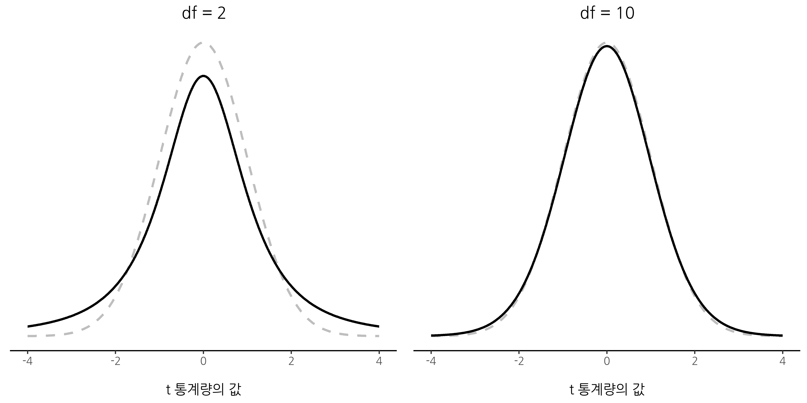

11 두 평균 비교하기
Chapter 10 에서는 결과변수와 예측변수가 모두 명목척도일 때의 상황을 다루었습니다. 실제로 이러한 특성을 가진 상황이 많으며, 특히 카이제곱 검정이 널리 사용되는 이유가 여기에 있습니다. 그러나 보다 일반적으로는 결과변수가 구간척도나 그 이상이며, 관심 있는 것은 한 집단에서의 평균값이 다른 집단보다 높은지 여부를 알고싶을 가능성이 큽니다. 예를 들어, 심리학자는 부모인 사람이 부모가 아닌 사람보다 불안 수준이 높은지, 음악을 듣는 것이 작업 기억 용량을 감소시키는지(듣지 않는 경우와 비교하여) 알고 싶어할 수 있습니다. 의료 분야에서는 새로운 약물이 혈압을 상승 또는 하강시키는지 확인하고자 할 수 있습니다. 농업 과학자는 인을 첨가하면 호주 자생 식물이 고사하는지 알고 싶어할 수도 있습니다.1 이 모든 경우에서 결과변수는 연속적이라 할만한 구간 또는 비율척도 변수이며, 예측변수는 이항적인 “집단 구분” 변수입니다. 다시 말해, 우리는 두 집단의 평균을 비교하고자 합니다.
평균을 비교하는 표준적인 방법은 \(t\)-검정을 사용하는 것이며, 해결하려는 정확한 질문에 따라 몇 가지 종류가 있습니다. 따라서 이 장에서는 다양한 \(t\)-검정 유형에 초점을 맞출 것입니다. 구체적으로, 단일 표본 \(t\)-검정, 독립 표본 \(t\)-검정, 대응 표본 \(t\)-검정을 다룰 것입니다. 이후에는 단측 검정을 논의한 후, \(t\)-검정의 효과 크기의 표준 측도인 Cohen의 \(d\)에 대해 살펴볼 것입니다. 마지막으로, \(t\)-검정이 갖는 가정과 그 가정이 위배되었을 때 가능한 해결 방법을 다룰 것입니다. 그러나 이러한 유용한 내용들을 논의하기 전에, 먼저 \(z\)-검정을 살펴보겠습니다.
11.1 단일 표본 \(z\)-검정
이 절에서는 통계에서 가장 쓸모없는 검정 중 하나인 \(z\)-검정을 설명하려고 합니다. 정말로! 이 검정은 실제로 거의 사용되지 않습니다. 유일한 진짜 목적은 통계를 가르칠 때 매우 편리한 징검다리 역할을 한다는 것입니다. 이는 아마도 통계에서 가장 (과도하게) 많이 사용되는 도구인 \(t\)-검정을 이해하는 과정에서 유용하기 때문입니다.
11.1.1 검정이 해결하려는 추론 문제
\(z\)-검정의 개념을 소개하기 위해 간단한 예제를 사용해 보겠습니다. 내 친구인 Zeppo 박사는 자신의 기초 통계학 수업을 곡선 채점 방식으로 평가합니다. 그의 수업의 평균 성적은 \(67.5\), 표준편차는 \(9.5\)라고 합시다. 그의 수백 명의 학생 중에서 20명이 심리학 수업도 수강합니다. 나는 호기심이 생겨서 심리학을 수강하는 학생들이 다른 학생들과 동일한 성적을 받는지(즉, 평균 \(67.5\)) 아니면 더 높은지 또는 낮은지 알고 싶어졌습니다. Zeppo 박사는 나에게 zeppo.csv 파일을 이메일로 보내 주었고, 나는 jamovi의 스프레드시트 보기에서 해당 학생들의 성적을 확인한 후, ‘탐구’—’기술통계’에서 평균을 계산했습니다.2 그 결과 평균값은 \(72.3\)이었습니다.
50 60 60 64 66 66 67 69 70 74 76 76 77 79 79 79 81 82 82 89
흠. 심리학 수강생들이 일반적으로 조금 더 높은 점수를 받는 것일 수도 있습니다. 표본 평균 \(\bar{X} = 72.3\)은 가정된 모집단 평균 \(\mu = 67.5\)보다 꽤 높은 편이지만, 한편으로는 표본 크기가 \(N = 20\)에 불과합니다. 어쩌면 단순한 우연일 수도 있습니다.
이 질문에 답하려면 내가 알고 있는 내용을 명확하게 정리하는 것이 도움이 됩니다. 우선, 표본 평균은 \(\bar{X} = 72.3\)임을 알고 있습니다. 심리학 수강생들이 다른 학생들과 동일한 표준편차를 가진다고 가정한다면, 모집단 표준편차는 \(\sigma = 9.5\)라고 할 수 있습니다. 또한 Zeppo 박사가 곡선 채점 방식을 사용하고 있기 때문에 심리학 수강생들의 성적이 정규 분포를 따른다고 가정할 것입니다.
다음으로, 내가 데이터에서 얻고자 하는 정보를 명확히 하는 것이 중요합니다. 이번 경우 내 연구 가설은 심리학 수강생들의 모집단 평균 \(\mu\)에 관한 것이며, 이는 현재 알려지지 않았습니다. 구체적으로 나는 \(\mu = 67.5\)인지 아닌지를 알고 싶습니다. 이것이 내가 알고 있는 사실이라면, 우리의 문제를 해결할 수 있는 가설 검정을 고안할 수 있을까요? 데이터와 함께, 데이터가 생성되었다고 가정하는 분포를 Figure 11.1 에 나타냈습니다. 확실한 답을 찾기가 쉽지 않네요. 그렇지 않은가요? 이를 해결하려면 통계적 기법이 필요합니다.
Tip 11.1. 실습: 심리학 수강생의 통계학 점수
이 실습을 하려면 Tip 3.1 을 수행하여 lsj-data 모듈이 설치되어 있어야 합니다.
‘파일’-‘열기’-’데이터 라이브러리’를 메뉴에서 선택합니다. 그러면 ’learning statistics with jamovi’라는 폴더가 보일 것입니다. 이 폴더를 선택합니다. 이미 이전 실습에서 이 폴더를 선택했으면 바로 이 폴더가 열릴 수도 있습니다.
데이터 라이브러리 목록에서 ’Zeppo’를 선택합니다.
‘데이터’ 메뉴를 선택한 후, 스프레드시트에서
x의 열이름을 더블클릭합니다. 그러면x의 척도유형을 ’명명척도’에서 ’연속변수’로 바꿉니다.‘탐구’-‘기술통계’ 메뉴를 선택합니다.
왼편의 ‘기술통계’ 창에서
x를 ‘변수’ 상자로 이동합니다.‘도표’ 옵션을 확장하여 ’히스토그램’을 체크합니다. 그러면 다음 같이
x의 평균 등의 기술통계량과 히스토그램을 확인할 수 있습니다.
11.1.2 가설 검정 구성하기
가설 검정을 구성하는 첫 번째 단계는 귀무가설과 대립가설이 무엇인지 명확히 하는 것입니다. 이는 그리 어렵지 않습니다. 우리의 귀무가설 \(H_0\)는 심리학 학생들의 실제 모집단 평균 \(\mu\)가 \(67.5\)라는 것이며, 대립가설은 모집단 평균이 \(67.5\)가 아니라는 것입니다. 이를 수학적 표기법으로 나타내면 다음과 같습니다:
\[ H_0:\mu= 67.5 \] \[ H_1:\mu \neq 67.5 \]
하지만 솔직히 말하면, 이 표기법이 문제에 대한 우리의 이해를 크게 향상시키지는 않습니다. 이는 단지 우리가 데이터에서 배우려는 내용을 간결하게 표현하는 방법일 뿐입니다. 우리의 검정을 위한 귀무가설 \(H_0\)와 대립가설 \(H_1\)은 Figure 11.2 에 예시되어 있습니다. 이러한 가설을 설정하는 것 외에도, 앞서 설명한 시나리오는 우리에게 유용할 수 있는 배경 정보를 제공합니다. 특히, 우리는 다음 두 가지 중요한 정보를 추가할 수 있습니다:
- 심리학 성적은 정규 분포를 따른다.
- 이 점수들의 실제 표준편차 \(\sigma\)는 \(9.5\)로 알려져 있다.
현재로서는 이 정보가 절대적으로 신뢰할 수 있는 사실이라고 가정할 것입니다. 실제로는 절대적으로 신뢰할 수 있는 배경 지식이 존재하지 않으며, 이러한 배경 지식에 의존하고자 한다면 이를 가정해야 합니다. 그러나 이러한 가정은 맞을 수도 그렇지 않을 수도 있으므로, 가정이 정당한지 확인해야 할 수도 있습니다. 하지만 지금은 단순한 접근 방식을 취하도록 하겠습니다.
다음 단계는 \(H_0\)와 \(H_1\)을 구별하는 데 도움이 되는 적절한 검정 통계량을 찾는 것입니다. 가설들이 모두 모집단 평균 \(\mu\)와 관련되어 있으므로, 표본 평균 \(\bar{X}\)가 유용한 출발점이 될 것이라고 확신할 수 있습니다. 우리가 할 수 있는 일은 표본 평균 \(\bar{X}\)와 귀무가설이 예측하는 모집단 평균 사이의 차이를 살펴보는 것입니다. 이 예제에서는 \(\bar{X} - 67.5\)를 계산하는 것입니다. 보다 일반적으로, 귀무가설이 주장하는 모집단 평균 값을 \(\mu_0\)라고 하면 다음을 계산해야 할 것입니다:
\[\bar{X}-\mu_0\]
이 값이 0에 가깝다면 귀무가설이 타당하게 여겨지지만, 이 값이 0에서 멀리 떨어져 있다면 귀무가설을 유지할 가치가 적어 보입니다. 그러면 얼마나 멀리 떨어져야 \(H_0\)를 기각하는 게 좋을까요?
이를 알아내려면 좀 더 세밀한 접근이 필요하며, 앞서 언급한 두 가지 배경 정보를 활용해야 합니다. 즉, 원래 데이터가 정규 분포를 따르고 있으며 모집단 표준편차 \(\sigma\)를 알고 있다는 점입니다. 만약 귀무가설이 참이라면, 즉 실제 평균이 \(\mu_0\)라면, 우리가 데이터의 전체 모집단 분포를 알고 있음을 의미합니다. 즉, 평균이 \(\mu_0\)이고 표준편차가 \(\sigma\)인 정규 분포입니다.3
좋습니다, 그렇다면 표본 평균 \(\bar{X}\)의 분포에 대해 무엇을 말할 수 있을까요? 이전에 논의한 바와 같이 (Section 8.3.3 참조), 평균 \(\mu\)를 갖는 표본 평균 \(\bar{X}\)의 표본 분포 또한 정규 분포를 따릅니다. 하지만 이 표본 분포의 표준편차인 \(se(\bar{X})\), 즉 평균의 표준오차는 다음과 같습니다:4
\[se(\bar{X})=\frac{\sigma}{\sqrt{N}}\]
여기서 필요한 요령은, 표본 평균 \(\bar{X}\)을 표준 점수로 변환하는 것입니다(Section 4.5 참조). 이는 관례적으로 \(z\)로 표기되지만, 여기서는 \(z_{ \bar{X}}\)라고 표기하겠습니다. 이렇게 확장된 표기법을 사용하는 이유는 우리가 표본 평균의 표준화된 값을 계산하는 것이지, 개별 관측값의 표준화된 값을 계산하는 것이 아님을 상기시키기 위해서입니다. 이렇게 하면, 표본 평균에 대한 \(z\)-점수는 다음과 같이 계산됩니다:
\[z_{\bar{X}}=\frac{\bar{X}- \mu_0}{SE(\bar{X})} =\frac{\bar{X}-\mu_0}{\frac{\sigma}{\sqrt{N}}}\]
이 \(z\)-점수가 우리의 검정 통계량입니다. 이 통계량을 사장점은 모든 \(z\)-점수와 마찬가지로 표준 정규 분포를 따른다는 점입니다.5
즉, 원래 데이터가 어떤 척도로 측정되었든 간에, \(z\)-통계량 자체는 항상 동일한 해석을 가집니다. 즉, 이는 관측된 표본 평균 \(\bar{X}\)과 귀무가설이 예측한 모집단 평균 \(\mu_0\) 사이의 차이를 표준오차의 배수로 나타낸 것입니다. 더 나아가, 원래 모집단 모수가 무슨 값이든 상관없이, \(z\)-검정의 5% 기각역은 항상 동일하며, 이는 Figure 11.3 에 표현되어 있습니다. 한때 사람들이 통계를 손으로 계산해야 했던 시절에는, 누군가 Table 11.1 같은 표를 출판하였으며, 연구자들은 \(z\)-통계량을 손으로 계산한 후 책에서 임계값을 찾아볼 수 있었습니다.
| 임계 \(z\)-값 | ||
|---|---|---|
| 희망 \(\alpha\) 수준 | 양측 검정 | 단측 검정 |
| .1 | 1.644854 | 1.281552 |
| .05 | 1.959964 | 1.644854 |
| .01 | 2.575829 | 2.326348 |
| .001 | 3.290527 | 3.090232 |
11.1.3 수작업을 통한 예제
앞서 언급했듯이, z-검정은 실제로 거의 사용되지 않습니다. 너무 드물게 사용되기 때문에, jamovi의 기본 설치에는 이를 수행하는 내장 함수조차 없습니다. 하지만 이 검정은 매우 간단하기 때문에 수작업으로도 쉽게 계산할 수 있습니다. 이제 Zeppo 교수의 수업 데이터를 다시 살펴보겠습니다. 성적 데이터를 불러온 후, 첫 번째로 해야 할 일은 표본 평균을 계산하는 것입니다. 이미 계산한 결과는 \(72.3\)입니다. 또한, 이미 알려진 모집단의 표준편차(\(\sigma = 9.5\)), 귀무가설에서 제시하는 모집단 평균 값(\(\mu_0 = 67.5\)), 그리고 표본 크기(\(N=20\))도 알고 있습니다.
다음으로, 평균의 (실제) 표준오차를 계산해 보겠습니다. 계산기로 쉽게 구할 수 있습니다.
\[ \begin{split} SE(\bar{X}) & = \frac{\sigma}{\sqrt{N}} \\\\ & = \frac{9.5}{\sqrt{20}} \\\\ & = 2.124265 \end{split} \]
마지막으로, \(z\)-점수를 계산합니다.
\[ \begin{split} z_{\bar{X}} & = \frac{\bar{X} - \mu_0}{SE(\bar{X})} \\\\ & = \frac{ (72.3 - 67.5)}{ 2.124265} \\\\ & = 2.259606 \end{split} \]
이 시점에서, 전통적인 방식으로 \(z\)-값 \(2.26\)을 임계값 표에서 찾아볼 수 있습니다. 우리의 원래 가설은 양측 검정(two-sided)이었습니다. 심리학 전공 학생들이 다른 학생들보다 통계학 성적이 더 높을지 낮을지에 대한 명확한 이론이 없었기 때문입니다. 따라서 가설 검정도 양측 검정(또는 양쪽 검정)으로 진행됩니다. 앞에서 본 작은 표를 참고하면, \(z\)-값 \(2.26\)은 유의수준 \(\alpha = .05\)에서 유의성을 가지기 위한 임계값 \(1.96\)보다 크지만, \(\alpha = .01\)에서 유의성을 가지기 위한 값 \(2.58\)보다는 작습니다. 따라서, 우리는 유의한 효과가 있다고 결론을 내릴 수 있으며, 이를 다음과 같이 기술할 수 있습니다.
심리학 전공 학생들의 표본 평균 성적이 \(73.2\)이므로, 모집단의 표준편차가 \(9.5\)라고 가정할 때, 심리학 전공 학생들은 강의 평균과 유의하게 다른 통계학 성적을 보였다* (\(z = 2.26, N = 20, p<.05\)).
11.1.4 z-검정의 가정
앞서 말했듯이, 모든 통계 검정에는 가정이 있습니다. 어떤 검정은 합리적인 가정을 하는 반면, 그렇지 않은 검정도 있습니다. 방금 설명한 단일 표본에 대한 \(z\)-검정은 세 가지 기본 가정을 합니다.
- 정규성. 일반적으로 설명되는 방식에 따르면, \(z\)-검정은 모집단의 실제 분포가 정규분포를 따른다고 가정합니다.6 이는 종종 꽤 합리적인 가정이며, 만약 이 가정이 걱정된다면 이를 확인할 수도 있습니다(예를 들어, 표본의 정규성을 확인하는 방법 절을 참조하세요).
- 독립성. 두 번째 가정은 데이터 내의 관측치들이 서로 상관관계를 가지지 않으며, 어떤 방식으로든 연관되지 않는다는 것입니다. 이를 통계적으로 확인하기가 쉽지 않으며, 실험 설계를 잘해야만 만족될 수 있습니다. 이 가정을 위반하는 명백한(그리고 어리석은) 예는 동일한 관측치를 데이터 파일에 여러 번 “복사”하여 실제로는 단 하나의 진정한 관측치만 존재하는데, 거대한 “표본 크기”를 만드는 경우입니다. 보다 현실적인 맥락에서는, 각 관측치가 연구 대상 모집단에서 완전히 무작위로 추출된 것인지 스스로에게 질문해봐야 합니다. 실무에서 이 가정이 완전히 충족되는 경우는 없지만, 우리는 데이터 사이의 상관관계로 인한 문제를 최소화하는 방식으로 연구를 설계하려고 노력합니다.
- 알려진 표준편차. 세 번째 가정은 연구자가 모집단의 실제 표준편차를 알고 있다는 것입니다. 이는 매우 비현실적인 가정입니다. 현실 세계의 데이터 분석에서 모집단의 표준편차 \(\sigma\)를 알고 있으면서 평균 \(\mu\)를 완전히 모르는 경우는 없습니다. 즉, 이 가정은 항상 틀린 가정입니다.
모집단의 표준편차 \(\sigma\)를 알고 있다는 가정이 어리석다는 점을 고려하면, 이를 생략할 수 있는지 살펴보는 것이 좋겠습니다. 이는 지루한 \(z\)-검정의 영역을 벗어나, 유니콘과 요정, 그리고 레프리콘이 사는 신비로운 \(t\)-검정의 세계로 우리를 안내합니다!
11.2 단일 표본 \(t\)-검정
곰곰이 생각해 본 결과, 심리학과 학생들의 성적이 반드시 Zeppo 교수의 수업을 듣는 다른 학생들과 동일한 표준편차를 가진다고 가정하는 것이 보장되지 않을 수도 있다고 판단했습니다 (Figure 11.4). 결국, 이들이 동일한 평균을 가지지 않는다는 가설을 고려하고 있다면, 왜 반드시 동일한 표준편차를 가져야 한다고 믿어야 할까요? 이러한 점을 고려하면, 모집단의 표준편차 \(\sigma\) 값을 알고 있다고 가정하는 것을 그만두어야 할 것입니다. 이는 \(z\)-검정의 가정을 위반하는 것이므로, 다시 원점으로 돌아간 셈입니다. 그러나 그렇다고 해서 완전히 방법이 없는 것은 아닙니다. 어쨌든, 원래 데이터에서 모집단의 표준편차를 추정할 수 있습니다. 그 값은 9.52입니다. 즉, \(\sigma = 9.5\)라고 확언할 수는 없지만, \(\hat{\sigma} = 9.52\)라고 말할 수는 있습니다.
좋습니다. 이제 보이는 길은 \(z\)-검정을 수행하되, 모집단의 표준편차를 \(9.5\)라고 가정하는 대신 추정된 표준편차 \(9.52\)를 사용하는 것이라고 생각할 수 있습니다. 그리고 이 방법을 사용해도 여전히 통계적으로 유의한 결과가 나올 것이라는 점은 놀랍지 않을 것입니다. 이 접근 방식은 꽤 해결책에 가깝지만, 완전히 정확하지는 않습니다. 이제 우리는 모집단의 표준편차의 추정값에 의존하고 있기 때문에, 실제 모집단의 표준편차가 정확히 무엇인지 모르는 불확실성을 반영해야 합니다. 어쩌면 우리가 얻은 데이터가 우연의 산물이어서 실제 모집단의 표준편차가 \(11\)일 수도 있습니다. 만약 그것이 사실이라면, 그리고 우리가 \(z\)-검정을 수행하면서 \(\sigma=11\)이라고 가정한다면, 결과는 유의하지 않게 나올 것입니다. 이것은 우리가 해결해야 할 문제이며 과제입니다.

11.2.1 \(t\)-검정 소개
이러한 표준편차의 애매성은 꽤 까다로운 문제이며, 1908년 William Sealy Gosset이라는 사람이 이를 해결했습니다(Student, 1908). 당시 그는 기네스(Guinness) 양조장에서 화학자로 일하고 있었는데(Box (1987) 참고), 기네스는 직원들이 통계 분석 결과를 출판하는 것을 탐탁지 않게 여겼습니다(아마도 영업 비밀로 여겼던 것 같습니다). 그래서 그는 “A Student”라는 가명으로 연구를 발표했으며, 오늘날까지도 \(t\)-검정의 공식 명칭은 스튜던트의 \(t\)-검정(Student’s \(t\)-test)입니다. Gosset이 핵심적으로 밝혀낸 것은 우리가 모집단의 표준 편차를 정확히 알지 못한다는 사실을 어떻게 반영해야 하는가 라는 점이었습니다.7 그 해답은 표본 분포가 앞의 \(z\)-검정의 표준정규분포에서 미묘하게 달라진다는 것입니다. \(t\)-검정에서 우리가 사용하는 검정 통계량은 이제 \(t\)-통계량이라고 불리며, 앞에서 설명한 방식과 동일하게 계산됩니다. 귀무가설이 참일 때 모집단의 평균을 \(\mu\), 표본 평균을 \(\bar{X}\)이고 모집단 표준 편차의 추정값을 \(\hat{\sigma}\)라고 하면, \(t\)-통계량은 다음과 같이 계산됩니다.
\[t=\frac{\bar{X}-\mu}{\frac{\hat{\sigma}}{\sqrt{N}}}\]
이 공식에서 바뀐 것은 기존의 알려진 모집단 표준 편차 \(\sigma\) 대신 추정값 \(\hat{\sigma}\)를 사용했다는 점과, 이 추정값이 \(N\)개의 관측값을 기반으로 계산되었다면 표본 분포는 자유도(\(df\))가 \(N-1\)인 \(t\)-분포가 된다는 것입니다. \(t\)-분포는 정규분포와 매우 유사하지만, “더 두꺼운 꼬리”를 가지고 있습니다. 이는 Section 7.6 에서 논의되었으며, Figure 11.5 에 시각적으로 표현되어 있습니다. 하지만 자유도(\(df\))가 커질수록 \(t\)-분포는 점점 표준정규분포와 동일해집니다. 이는 당연한 일입니다. 만약 표본 크기 \(N\)이 70,000,000이라면, 표준 편차의 추정값은 거의 완벽할 것입니다. 따라서 \(N\)이 매우 클 경우, \(t\)-검정은 \(z\)-검정과 동일한 방식으로 작동할 것이라고 기대할 수 있습니다. 그리고 실제로도 그렇게 됩니다!

11.2.2 jamovi에서 검정 수행하기
예상할 수 있듯이, \(t\)-검정의 절차는 \(z\)-검정과 거의 동일합니다. 따라서 저수준 명령어를 사용하여 계산하는 방법을 지루하게 설명하는 것은 큰 의미가 없습니다. 앞서 수행했던 계산과 거의 동일하지만, 표준 편차의 추정값을 사용하고, 정규분포 대신 \(t\)-분포를 이용해 가설을 검정한다는 점만 다릅니다. 따라서 다시 한번 자세한 계산 과정을 반복하는 대신, 실제 \(t\)-검정을 수행하는 방법을 바로 보여드리겠습니다.
jamovi에는 다양한 유형의 \(t\)-검정을 수행할 수 있는 매우 유연한 분석 기능이 있습니다. 사용 방법도 매우 간단합니다. ‘분석’-‘T-검정’-‘단일표본 T-검정’8을 선택하고, 관심 있는 변수(\(X\))를 ‘변수’ 상자로 이동한 후, 귀무가설의 평균값(‘67.5’)을 ‘가설’-‘검정 값’ 상자에 입력하면 됩니다. 매우 간단하죠. Figure 11.6 을 보면, 여러 정보가 표시되는데, 여기서 가장 중요한 것은 \(t\)-검정 통계량이 2.25이고, 자유도는 19이며, 이에 해당하는 \(p\)-값이 \(0.036\)이라는 점입니다.
또한 결과에는 두 가지 추가적인 정보도 포함시킬 수 있습니다. 하나는 95% 신뢰 구간이며, 다른 하나는 효과 크기입니다(효과 크기에 대해서는 나중에 더 자세히 설명할 예정입니다). 지금까지의 과정은 비교적 간단했습니다. 그렇다면, 이제 이 출력을 어떻게 해석해야 할까요?
우리가 이 예제를 진지하게 분석한다고 가정하면, 결과가 통계적으로 유의미하다는 사실(\(p\)-값이 0.05보다 작음)에 기뻐할 것입니다. 이러한 결과를 보고할 때는 다음과 같이 표현할 수 있습니다.
> 평균 성적이 \(72.3\)인 심리학 학생들은 평균 성적 \(67.5\)보다 약간 높은 점수를 기록했다 (\(t(19) = 2.25\), \(p = .036\)); 평균 차이는 \(4.80\)이었으며, 95% 신뢰 구간은 \(0.34\)에서 \(9.26\)이었다.
여기서 \(t(19)\)는 자유도가 19인 \(t\) 통계량을 의미하는 표기법입니다. 다만, 많은 경우 신뢰 구간을 보고하지 않거나, 훨씬 간결한 형식으로 제시하는 경우가 많습니다. 예를 들어, 평균 차이를 보고한 후 통계 블록 안에 신뢰 구간을 포함하는 방식도 일반적입니다.
\[t(19)=2.25, p = .036, CI_{95} = [0.34, 9.26]\]
이렇게 반 줄에 엄청난 양의 전문 용어를 집어넣으면 똑똑해 보이는 효과가 있죠.9
11.2.3 단일 표본 \(t\)-검정의 가정
그렇다면 단일 표본 \(t\)-검정은 어떤 가정을 할까요? 기본적으로 \(t\)-검정은 \(z\)-검정에서 “모집단의 표준편차를 알고 있다”는 가정을 제거한 버전이므로, \(z\)-검정과 동일한 가정을 하지만, 알려진 표준편차에 대한 가정만 빠졌다고 보면 됩니다. 즉, 다음과 같은 가정을 합니다.
- 정규성. 여전히 모집단 분포가 정규분포를 따른다고 가정합니다.10 앞서 언급했듯이, 이 가정이 충족되는지 확인할 수 있는 표준적인 도구들이 있으며([표본의 정규성 확인하기]), 이 가정이 위배될 경우 사용할 수 있는 대체 검정 방법도 있습니다([비정규 데이터 검정하기]).
- 독립성. 마찬가지로 표본 내의 각 관측값이 서로 독립적으로 생성되었다고 가정해야 합니다. 자세한 내용은 앞서 논의한 \(z\)-검정의 가정을 참고하세요([\(z\)-검정의 가정]).
전반적으로 이 두 가지 가정은 크게 무리가 없는 편이며, 그 결과 단일 표본 \(t\)-검정은 표본 평균을 가설적인 모집단의 평균과 비교하는 데 널리 사용됩니다.
11.3 독립 표본 \(t\)-검정 (Student 검정)
단일 표본 \(t\)-검정도 유용하게 쓰이지만, 가장 일반적인 \(t\)-검정의 예는 아닙니다.11 훨씬 더 흔한 경우는 두 개의 서로 다른 관측 집단이 있을 때입니다. 심리학에서는 보통 두 개의 서로 다른 참가자 집단이 존재하며, 각 집단은 연구에서 서로 다른 조건에 해당합니다. 연구에서는 각 참가자에 대해 특정한 결과 변수를 측정하고, 두 집단의 모집단 평균이 동일한지 조사하는 것이 핵심적 질문이 됩니다. 독립 표본 \(t\)-검정은 바로 이러한 상황을 다루도록 설계되었습니다.
11.3.1 데이터
Harpo 박사의 통계 강의를 듣는 학생이 33명 있다고 가정해 봅시다. Harpo 박사는 성적을 곡선 조정을 하여 매기지 않습니다. 사실, Harpo 박사의 성적 부여 방식은 꽤 미스터리하기 때문에 전체 반의 평균 성적이 어느 정도인지도 잘 모릅니다. 이 강의에는 두 명의 튜터, Anastasia와 Bernadette가 있습니다. Anastasia의 수업을 듣는 학생은 \(N_1 = 15\)명이고, Bernadette의 수업을 듣는 학생은 \(N_2 = 18\)명입니다. 여기서 우리가 궁금한 것은 Anastasia가 Bernadette보다 더 나은 튜터인지, 아니면 별 차이가 없는지입니다.
Harpo 작사가 harpo.csv 파일로 성적 데이터를 이메일로 보내주었습니다. 평소처럼 jamovi에 파일을 로드하고, 포함된 변수를 살펴보았습니다. 데이터에는 세 개의 변수가 있습니다: ID, grade(성적), tutor(튜터).
grade변수에는 각 학생의 성적이 들어 있지만, jamovi에서 올바른 측정 유형으로 설정되어 있지 않았습니다. 따라서 이를 ’연속변수’로 변경해야 합니다(데이터의 측정 수준 변경 참고).
tutor변수는 각 학생이 어떤 튜터(Anastasia 또는 Bernadette)에게 배정되었는지를 나타내는 범주형 변수입니다.
평균과 표준편차를 계산하기 위해 jamovi에서 ‘탐구’-’기술분석’에서 평균과 표준편차를 계산하면, 아래의 요약 표(Table 11.2)가 생성됩니다.
| 평균 | 표준편차 | \( N \) | |
|---|---|---|---|
| Anastasia의 학생 | 74.53 | 9.00 | 15 |
| Bernadette의 학생 | 69.06 | 5.77 | 18 |
데이터의 분포를 보다 직관적으로 보여주기 위해, jamovi에서 박스 도표와 바이올린 도표를 그려 보았습니다. 여기에 평균 점수를 작은 실선 사각형으로 표시했습니다. 이 도표은 두 튜터 집단의 성적 분포를 나타내며(Figure 11.7),

실습: 튜터 별 점수 비교
이 실습을 하려면 Tip 3.1 을 수행하여 lsj-data 모듈이 설치되어 있어야 합니다.
‘파일’-‘열기’-’데이터 라이브러리’를 메뉴에서 선택합니다. 그러면 ’learning statistics with jamovi’라는 폴더가 보일 것입니다. 이 폴더를 선택합니다. 이미 이전 실습에서 이 폴더를 선택했으면 바로 이 폴더가 열릴 수도 있습니다.
데이터 라이브러리 목록에서 ’Harpo’를 선택합니다.
스프레드시트에서
grade의 열이름을 더블클릭합니다. 그리고grade의 척도유형을 ’명명척도’에서 ’연속변수’로 바꿉니다.‘탐구’-‘기술통계’ 메뉴를 선택합니다.
tutor별로grade에 대한 기술통계를 하기 위하여, 왼편의 ‘기술통계’ 창에서grade를 ‘변수’ 상자로,tutor를 ‘Split by’ 상자로 이동합니다. 그리고tutor별로 평균 등의 기술통계량을 비교하기 좋도록 한 행에 나타나도록, ‘기술통계’ 드롭다운 박스에서 ’Variables across rows’를 선택합니다.‘도표’ 옵션을 확장하여 ‘박스 도표’, ‘Violin’, ‘데이터’, ’평균’을 체크합니다. 그러면 다음 같이
grade가tutor별로 그룹화되어 박스와 바이올린 도표가 그려지고, 데이터(둥근 점)와 평균치(사각형 점)도 표시됩니다.
11.3.2 검정 소개
독립 표본 \(t\)-검정에는 두 가지 형태가 있습니다: Student 검정과 Welch 검정입니다. 이 장에서 설명할 Student \(t\)-검정은 두 가지 중 더 간단한 방법이지만, Welch \(t\)-검정보다 훨씬 더 엄격한 가정을 필요로 합니다. 우선 양측 검정을 수행한다고 가정하면, 두 개의 “독립적인 표본”이 평균이 같은 모집단에서 추출되었는지(귀무가설) 아니면 서로 평균이 다른 모집단에서 추출되었는지(대립가설)를 판단하는 것이 목표입니다. 여기서 “독립적”이라는 표현은 두 표본 내의 관측값들이 서로 특별한 관계를 갖지 않는다는 의미입니다. 이것이 지금 당장은 직관적으로 이해되지 않을 수 있지만, 나중에 대응 표본 \(t\)-검정을 설명할 때 더 명확해질 것입니다. 지금은 참가자들이 무작위로 두 집단 중 하나에 할당되고, 두 집단 간의 평균 성과를 비교하려는 실험 설계라면 독립 표본 \(t\)-검정을 사용해야 한다는 것만 언급해 두겠습니다.
이제, 집단 1(예: Anastasia의 학생들)의 모집단 평균을 \(\mu_1\), 집단 2(예: Bernadette의 학생들)의 모집단 평균을 \(\mu_2\)라고 하고,12 그리고 각 집단의 관측된 표본 평균을 \(\bar{X_1}\), \(\bar{X_2}\)라고 하겠습니다. 그러면 귀무가설은 두 모집단 평균이 같다는 것이고(\(\mu_1 = \mu_2\)), 대립가설은 두 모집단 평균이 다르다는 것입니다(\(\mu_1 \neq \mu_2\))(Figure 11.8). 이를 수식으로 표현하면 다음과 같습니다:
\[H_0: \mu_1=\mu_2 \]
\[H_A: \mu_1 \neq \mu_2 \]
만약 귀무가설이 참이라면 모집단 평균의 차이는 정확히 0이어야 합니다(\(\mu_1 - \mu_2 = 0\)). 따라서, 검정 통계량은 두 표본 평균 간의 차이를 기반으로 계산되어야 할 것입니다. 왜냐하면 귀무가설이 참이라면 \(\bar{X}_1 - \bar{X}_2\) 값은 0에 가까울 것으로 예상되기 때문입니다. 그러나 단일 표본 \(z\)-검정 및 단일 표본 \(t\)-검정에서 봤듯이, 이 차이가 0에 얼마나 가까워야 하는지를 명확히 해야 합니다. 이 문제를 해결하는 방법은 이전과 거의 동일합니다. 표준오차(SE)를 추정한 후, 표본 평균 차이를 표준 오차로 나누는 것입니다. 즉, 독립 표본 검정의 \(t\)-통계량은 다음과 같이 정의됩니다:
\[t=\frac{\bar{X_1}-\bar{X_2}}{SE}\]

이제, 남은 과제는 표준오차의 추정값을 정확히 계산하는 것입니다. 이 과정은 지금까지 다룬 다른 검정보다 조금 더 복잡하기 때문에, 좀 더 신중하게 살펴볼 필요가 있습니다.
11.3.3 표준 편차의 “합동 추정치”
원래의 “Student \(t\)-검정”에서는 두 모집단이 동일한 표준편차를 가진다고 가정합니다. 즉, 모집단 평균이 동일한지 여부와 관계없이 모집단의 표준편차가 동일하다고 가정하며, 이를 수식으로 나타내면 \(\sigma_1 = \sigma_2\)입니다. 두 표준편차가 동일하다고 가정하기 때문에 첨자를 생략하고 둘 다 \(\sigma\)로 표기합니다. 그렇다면 이를 어떻게 추정해야 할까요? 두 개의 표본이 있을 때 단일한 표준편차 추정치를 어떻게 구성해야 할까요? 기본적으로는 평균을 내는 방식으로 사용합니다. 정확히는 표본들의 분산 추정치를 가중 평균하여 합동 분산 추정치(pooled estimate of the variance)를 사용합니다. 각 표본에 할당되는 가중치는 해당 표본의 관측치 개수에서 1을 뺀 값과 같습니다.
수학적으로 이를 다음과 같이 표현할 수 있습니다. \[w_1=N_1-1\] \[w_2=N_2-1\]
이제 각 표본에 가중치를 할당했으므로 두 분산 추정치 \(\hat{\sigma}_{1}^{2}\)와 \(\hat{\sigma}_{2}^{2}\)의 가중 평균을 취하여 합동 분산 추정치를 계산할 수 있습니다. \[\hat{\sigma}_p^2=\frac{w_1\hat{\sigma}_1^2+w_2\hat{\sigma}_2^2}{w_1+w_2}\]
마지막으로, 결합된 분산 추정치의 제곱근을 취하여 합동 표준편차 추정치를 구합니다.13 \[\hat{\sigma}_p=\sqrt{\frac{w_1\hat{\sigma}_1^2+w_2\hat{\sigma}_2^2}{w_1+w_2}}\]
11.4 검정 수행하기
어떤 방식으로 생각하든 이제 우리는 표준 편차의 합동 추정치를 구했습니다. 이제부터는 귀찮은 하위 첨자 \(p\) 를 생략하고, 이 추정값을 단순히 \(\hat{\sigma}\)라고 부르겠습니다. 좋습니다. 이제 다시 귀찮은 가설 검정으로 돌아가 봅시다. 우리가 이 합동 추정치를 계산한 이유는 표준오차를 구하는 데 유용하기 때문이었습니다. 하지만 무엇에 대한 표준오차일까요? 단일 표본 \(t\)-검정에서 우리는 표본평균의 표준오차 \(se(\bar{X})\)를 사용했습니다. \(se(\bar{X}) = \frac{\sigma}{\sqrt{N}}\)이므로 \(t\)-통계량의 분모는 이 값으로 구성되었습니다. 하지만 이번에는 두 개의 표본평균을 가지고 있습니다. 그리고 우리가 관심 있는 것은 두 평균의 차이 \(\bar{X}_1 - \bar{X}_2\)입니다. 따라서 우리가 나누어야 할 표준오차는 두 표본평균의 차이의 표준 오차 입니다.
두 변수가 실제로 동일한 표준 편차를 가진다고 가정하면, 표준오차의 추정값은 다음과 같습니다: \[SE(\bar{X}_1-\bar{X}_2)=\hat{\sigma}\sqrt{\frac{1}{N_1}+\frac{1}{N_2}}\]
따라서 우리의 \(t\)-통계량은 다음과 같이 주어집니다: \[t=\frac{\bar{X}_1-\bar{X}_2}{SE(\bar{X}_1-\bar{X}_2)}\]
단일 표본 검정에서 봤던 것처럼, 만약 귀무가설이 참이고 검정의 모든 가정이 충족된다면, 이 \(t\) -통계량의 표본 분포는 \(t\)-분포를 따릅니다(놀랍죠?). 하지만 자유도는 약간 다릅니다. 일반적으로 자유도는 데이터 포인트의 개수에서 제약 조건의 개수를 뺀 값으로 생각할 수 있습니다. 이번 경우에는 총 \(N\) 개의 관측값(\(N_1\) 개는 표본 1에서, \(N_2\) 개는 표본 2에서)을 가지고 있으며, 두 개의 제약 조건(표본평균들)이 존재합니다. 따라서 이 검정의 총 자유도는 \(N - 2\)가 됩니다.
11.4.1 jamovi에서 검정 수행하기
예상대로, jamovi에서 독립 표본 \(t\)-검정을 쉽게 수행할 수 있습니다. 이 검정에서 종속 변수는 학생들의 성적이며, 집단은 각 반의 담당 튜터에 의해 정의됩니다. 따라서 jamovi에서 해야 할 일은 ‘분석)’-‘T-검정’-‘독립 표본 T-검정’으로 이동한 후, grade 변수를 ’종속변수’ 상자로, tutor 변수를 ‘집단 변수’ 상자로 이동시키는 것입니다. Figure 11.9 에 이 과정이 나타나 있습니다.[^11-comparing-two-means-k-2] [^11-comparing-two-means-k-2]: <역주> Figure 11.9 의 \(t\)-검정 결과를 보면 ’표준오차의 차이’라는 항목이 나옵니다. 이 항목은 두 표본평균의 차이의 표준오차인 \[SE(\bar{X}_1-\bar{X}_2)\]를 의미합니다. 그러므로 차이의 표준오차라고 번역했어야 하는 용어입니다.
출력 결과는 매우 익숙한 형식을 띱니다. 먼저, 어떤 검정을 수행했는지, 그리고 사용한 종속 변수의 이름을 알려줍니다. 그런 다음, 검정 결과를 제공합니다. 지난번과 마찬가지로, 검정 결과에는 \(t\) -통계량, 자유도, \(p\)-값이 포함됩니다. 마지막 부분에서는 두 가지 정보를 제공합니다. 하나는 신뢰 구간이고, 다른 하나는 효과 크기입니다. 효과 크기에 대해서는 나중에 설명하겠습니다. 하지만 신뢰 구간에 대해서는 지금 이야기해야 할 것 같습니다.
이 신뢰 구간이 정확히 무엇을 의미하는지 명확히 이해하는 것이 중요합니다. 이 신뢰 구간은 집단 평균 사이의 차이에 대한 신뢰 구간입니다. 예제에서 Anastasia의 학생들의 평균 성적은 74.53, Bernadette 학생들의 평균 성적은 69.06이므로, 두 표본 평균의 차이는 5.48입니다. 그러나 모집단 평균의 차이는 이것보다 클 수도, 작을 수도 있습니다. Figure 11.10 에서 제시된 신뢰 구간은 만약 이 연구를 반복적으로 수행한다면, 95% 정도 실제 평균 차이가 신뢰구간 안에 있을 것을 의미합니다. 이 예에서 신뢰구간은 0.20에서 10.76까지입니다. 신뢰 구간이 무엇을 의미하는지 다시 확인하고 싶다면 Section 8.5 을 참조하세요.
어쨌든, 두 집단 사이의 차이는 (아슬아슬하게) 유의합니다. 따라서 결과를 다음과 같은 형식으로 기술할 수 있습니다.
Anastasia 반의 평균 성적은 74.5(표준 편차 = 9.0)이었으며, Bernadette 반의 평균 성적은 69.1 (표준 편차 = 5.8)였습니다. 스튜던트의 독립 표본 \(t\)-검정 결과, 이 5.4의 차이는 통계적으로 유의한 것으로 나타났습니다(\(t(31) = 2.1, p<.05, CI_{95} = [0.2, 10.8], d = .74\)). 이는 학습 결과에서 실제 차이가 발생했을 가능성을 시사합니다.
여기서 신뢰구간과 효과 크기를 통계 블록에 포함시켰습니다. 하지만 사람들은 항상 이렇게 하지는 않습니다. 최소한 \(t\)-통계량, 자유도, \(p\)-값은 포함해야 합니다. 따라서 최소한 다음과 같은 내용을 포함해야 합니다: \(t(31) = 2.1, p< .05\).
통계학자들이 원하는 방식대로라면, 모든 사람이 신뢰구간과 효과 크기 역시 보고해야 합니다. 왜냐하면 이 값들은 유용한 정보이기 때문입니다. 그러나 현실에서는 통계학자들이 원하는 방식대로 항상 이루어지지는 않습니다. 따라서 독자가 필요로 할지를 기준으로 정보를 제공하는 것이 좋은 판단일 것입니다. 만약 과학 논문을 작성하고 있다면, 해당 저널의 편집 기준을 따르는 것이 중요합니다. 일부 저널은 효과 크기 보고를 요구하지만, 다른 저널은 그렇지 않습니다. 또한 일부 학문 공동체에서는 신뢰구간을 보고하는 것이 표준이지만, 다른 곳에서는 그렇지 않습니다. 결국, 청중이 기대하는 것이 무엇인지 파악하는 것이 중요합니다. 그러나 한 가지 명확한 점은, 제 수업을 듣고 있다면 신뢰구간과 효과 크기를 포함하는 것이 일반적으로 바람직하다는 것이 제 기본 입장 이라는 것입니다.
실습: 독립표본 Student t-검정
이 실습을 하려면 Tip 3.1 을 수행하여 lsj-data 모듈이 설치되어 있어야 합니다.
‘파일’-‘열기’-’데이터 라이브러리’를 메뉴에서 선택합니다. 그러면 ’learning statistics with jamovi’라는 폴더가 보일 것입니다. 이 폴더를 선택합니다. 이미 이전 실습에서 이 폴더를 선택했으면 바로 이 폴더가 열릴 수도 있습니다.
데이터 라이브러리 목록에서 ’Harpo’를 선택합니다.
스프레드시트에서
grade의 열이름을 더블클릭합니다. 그리고grade의 척도유형을 ’명명척도’에서 ’연속변수’로 바꿉니다.‘분석’-‘T-검정’-‘독립표본 T-검정’ 메뉴를 선택합니다.
왼편의 ‘독립표본 T-검정’ 창에서 다음을 수행합니다. 그러면 아래 그림과 같은 결과가 나타납니다.
grade를 ‘종속변수’ 상자로,tutor를 ‘집단변수’ 상자로 이동합니다.- ‘추가 통계’에서 ’평균 차이’와 그 아래의 ’신뢰구간’, ’효과 크기’를 체크합니다.
- ’가정검정’에서 ’동질성 검정’과 ’정규분포성 검정’을 체크합니다.
11.4.2 양수 및 음수의 \(t\)-값
\(t\)-검정의 가정을 논의하기 전에, 실제로 \(t\)-검정을 사용할 때 고려해야 할 추가적인 사항이 있습니다. 그중 하나는 \(t\)-통계량의 부호(즉, 양수인지 음수인지)와 관련이 있습니다. 처음 \(t\)-검정을 수행하는 학생들이 흔히 걱정하는 부분 중 하나는 \(t\)-통계량이 음수 값으로 나타나는 경우입니다. 어떻게 해석해야 할지 몰라 당황하는 경우가 많죠. 사실, 서로 독립적으로 작업한 두 사람이 거의 동일한 결과를 얻었음에도 불구하고, 한 사람은 양수 \(t\) 값을, 다른 사람은 음수 \(t\) 값을 얻는 일은 흔한 일입니다. 이 경우, 양측 검정을 수행하고 있다면 \(p\)-값은 동일하게 나타납니다. 조금 더 자세히 들여다보면, 신뢰 구간(confidence interval) 또한 서로 반대 부호를 가지는 것을 알 수 있습니다. 이는 전혀 문제가 되지 않습니다. 이러한 상황이 발생하는 이유는 \(t\)-검정을 수행하는 방식이 약간씩 다를 수 있기 때문입니다.
이는 매우 간단한 원리에서 비롯됩니다. 우리가 계산하는 \(t\)-통계량의 일반적인 형태는 다음과 같습니다.
\[t=\frac{\text{평균 1 - 평균 2}}{SE}\]
즉, “평균 1”이 “평균 2”보다 크면 \(t\)-통계량은 양수가 되고, 반대로 “평균 2”가 더 크다면 \(t\)-통계량은 음수가 됩니다. 마찬가지로, jamovi에서 보고하는 신뢰 구간은 “(평균 1) - (평균 2)”에 대한 신뢰 구간이므로, “(평균 2) - (평균 1)”을 기준으로 신뢰 구간을 계산했다면 부호가 반대가 되었을 것입니다.
이제, Anastasia 반과 Bernadette 반의 성적을 비교하는 \(t\)-검정을 수행한다고 가정해 봅시다. 여기서 어느 반을 “평균 1”로, 어느 반을 “평균 2”로 지정해야 할까요? 사실, 이는 임의적으로 정할 수 있습니다. 하지만 어떤 방식이든 한 그룹을 “평균 1”로, 다른 그룹을 “평균 2”로 지정해야 합니다.
jamovi에서는 이 과정을 비교적 임의적으로 처리합니다. 이전 버전의 책에서는 이를 설명하려 했지만, 결국 포기했습니다. 사실, 이 문제는 크게 중요하지 않으며, 솔직히 말해 저조차도 매번 기억하지 못하기 때문입니다. 저는 유의미한 \(t\)-검정 결과를 얻었을 때, 어느 평균이 더 큰지를 확인하려면 굳이 \(t\)-통계량을 살펴보지 않습니다. 그럴 필요가 있을까요? 어리석은 일이죠. jamovi 출력에서 실제 그룹의 평균 값을 직접 확인하는 것이 훨씬 쉽습니다! 여기서 중요한 점은 jamovi에서 어떤 결과를 보여주든 상관없이, 저는 보통 \(t\)-통계량을 보고서의 텍스트와 일치하도록 정리한다는 것입니다. 예를 들어, 보고서에 다음과 같이 작성하고 싶다고 가정해 봅시다.
“Anastasia 반은 Bernadette 반보다 더 높은 성적을 기록했다.”
여기서 “더 높은”이라는 표현은 Anastasia 반이 먼저 등장한다는 것을 의미합니다. 따라서, \(t\)-통계량을 Anastasia 반이 그룹 1에 해당하는 것처럼 보고하는 것이 논리적으로 맞습니다. 즉, 다음과 같이 작성하는 것이 자연스럽습니다.
“Anastasia 반은 Bernadette 반보다 더 높은 성적을 기록했다 \((t(31) = 2.1, p = .04)\).” (실제로 “더 높은”이라는 단어에 밑줄을 치지는 않겠지만, 여기서는 강조하기 위해 표시한 것입니다.)
반면, 문장을 다르게 구성하여 Bernadette 반을 먼저 언급하고 싶다면, Bernadette 반을 집단 1로 지정하는 것이 더 적절할 것입니다. 이 경우, 보고서는 다음과 같이 작성할 수 있습니다.
“Bernadette 반은 Anastasia 반보다 더 낮은 성적을 기록했다 \((t(31) = -2.1, p = .04)\).”
여기서는 “더 낮은”이라는 표현을 사용했기 때문에, \(t\)-통계량을 음수 형태로 제시하는 것이 보다 자연스럽습니다. 이렇게 하면 문장이 훨씬 깔끔하게 읽힙니다.
마지막으로 한 가지 더 말씀드리자면, 이러한 방식은 다른 유형의 검정 통계량에는 적용할 수 없습니다. 이는 \(t\)-검정에서는 유효하지만, 카이제곱(chi-square) 검정, \(F\)-검정, 혹은 이 책에서 다룰 대부분의 다른 검정에서는 의미가 없습니다. 그러니 이 조언을 과도하게 일반화하지 마세요! 저는 오직 \(t\)-검정에 대해서만 이야기하고 있습니다!ㅐ
11.4.3 Student \(t\)-검정의 가정
항상 그렇듯이, 가설 검정은 몇 가지 가정에 의존합니다. 그렇다면 Student \(t\)-검정에서 필요한 가정은 무엇일까요? Student \(t\)-검정에는 세 가지 가정이 있으며, 일부는 이전에 단일 표본 \(t\)-검정을 논의할 때도 등장했습니다(참고: 단일 표본 \(t\)-검정의 가정).
- 정규성. 단일 표본 \(t\)-검정과 마찬가지로, 데이터가 정규 분포를 따른다고 가정합니다. 구체적으로는 두 집단 모두 정규 분포를 따른다고 가정합니다.14 표본의 정규성 검토 절에서 정규성을 검정하는 방법을 논의할 것이며, 비정규 분포 데이터 검정 절에서는 해결 방법을 다룰 것입니다.
- 독립성. 마찬가지로, 관측값이 독립적으로 표본추출되었다고 가정합니다. Student \(t\)-검정에서는 이 가정이 두 가지 측면에서 적용됩니다. 첫째, 각 표본 내의 관측값이 서로 독립적이어야 합니다(이는 단일 표본 검정과 동일합니다). 둘째, 표본 간에 의존성이 없어야 합니다. 예를 들어, 연구에서 동일한 참가자가 실수로 서로 다른 실험 조건의 표본에 여러 번 참여하도록 허용되었다면, 표본 사이에 의존성이 발생하게 되며, 그런 경우에는 분석에서 이를 고려해야 합니다.
- 분산의 동질성 (또는 “등분산성(homoscedasticity)”). 세 번째 가정은 두 집단의 모집단 표준편차가 동일하다는 것입니다. 이 가정은 Levene 검정을 사용하여 확인할 수 있으며, 이에 대해서는 책의 후반부에서 자세히 설명할 것입니다(Section 13.6.1). 하지만, 이 가정이 걱정된다면 이를 해결할 수 있는 간단한 방법이 있으며, 다음 절에서 설명하겠습니다.
11.5 독립 표본 \(t\)-검정 (Welch 검정)
실제 분석에서 Student 검정을 사용할 때 가장 큰 문제는 앞서 설명한 세 번째 가정입니다. 즉, 두 그룹이 동일한 표준편차를 가진다고 가정하는 것입니다. 하지만 현실에서는 이 가정이 거의 성립하지 않습니다. 두 표본이 평균이 다르다면, 표준편차도 다를 가능성이 높습니다. 이러한 가정이 성립해야 할 이유는 없습니다. 이 가정을 확인하는 방법에 대해서는 이후에 다루겠습니다. 왜냐하면 이는 \(t\)-검정뿐만 아니라 여러 다른 분석에서도 등장하기 때문입니다. 하지만 지금은 이 가정을 필요로 하지 않는 다른 형태의 \(t\)-검정(Welch, 1947)에 대해 설명하겠습니다. 데이터에 대해 Welch \(t\)-검정이 가정하는 내용을 시각화한 것이 Figure 11.10 이며, 이는 Student 검정의 가정(Figure 11.8)과 비교할 수 있습니다.
등분산성에 대한 진단을 설명하기 전에 그 해결책부터 설명하는 것이 다소 이상하게 보일 수도 있습니다. 하지만 jamovi에서는 Welch 검정을 ‘독립 표본 T-검정’ 옵션 중 하나로 선택할 수 있기 때문에, 여기에서 논의하는 것이 가장 적절할 것입니다.
Welch 검정은 Student 검정과 매우 유사합니다. 예를 들어, Welch 검정에서 사용하는 \(t\)-통계량은 Student 검정에서와 거의 동일한 방식으로 계산됩니다. 즉, 표본 평균의 차이를 구한 후, 그 차이에 대한 표준 오차의 추정값으로 나누는 방식입니다.
\[t=\frac{\bar{X}_1-\bar{X}_2}{SE(\bar{X}_1-\bar{X}_2)}\]
주된 차이점은 표준오차 계산 방식이 다르다는 것입니다. 만약 두 모집단의 표준편차가 서로 다르다면, 두 표본의 표준편차를 단순히 평균 내어 ’합동 표준편차’를 계산하는 것은 비합리적입니다. 이는 마치 사과와 오렌지를 평균 내는 것과 같습니다.15
하지만 표본 평균 차이에 대한 표준 오차는 여전히 추정할 수 있으며, 계산 방식이 다를 뿐입니다. 그 공식은 다음과 같습니다.
\[SE(\bar{X}_1-\bar{X}_2)=\sqrt{\frac{\hat{\sigma}_1^2}{N_1}+\frac{\hat{\sigma}_2^2}{N_2}}\]
이 방식으로 계산하는 이유는 이 책의 범위를 벗어나는 내용이므로 깊이 다루지는 않겠습니다. 중요한 것은 Welch \(t\)-검정에서 도출된 \(t\)-통계량이 Student \(t\)-검정에서 나온 것과 다소 다르다는 점입니다.
Welch 검정과 Student 검정의 두 번째 차이점은 자유도를 계산하는 방식입니다. Welch 검정에서는 자유도가 반드시 정수일 필요가 없으며, 지금까지 사용했던 “데이터 개수에서 제약 개수를 뺀 값”이라는 직관적인 계산 방식과도 크게 일치하지 않습니다.
11.5.1 jamovi에서 Welch 검정 수행하기
위에서 수행한 분석에서 Welch 검정 옵션(‘Welch’s’)을 체크하면, 다음과 같은 결과를 얻을 수 있습니다 (Figure 11.11).
이 출력 결과의 해석은 비교적 간단합니다. Welch 검정의 결과를 Student 검정의 결과와 동일한 방식으로 읽으면 됩니다. 기술 통계, 검정 결과 및 기타 정보가 제공되므로 해석하기 어렵지 않습니다.
그런데, 이번 결과는 유의하지 않게 나왔습니다. 앞서 Student 검정을 실행했을 때는 유의한 효과가 있었지만, 같은 데이터 세트에 대해 Welch 검정을 실행하니 그렇지 않습니다\((t(23.02) = 2.03, p = .054)\). 이게 무슨 의미일까요? 당황해야 할까요? 하늘이 무너지는 걸까요? 아마 아닐 겁니다. 한 검정에서는 유의한 결과가 나오고 다른 검정에서는 나오지 않는다는 사실 자체는 큰 의미를 갖지 않습니다. 특히, 이번 데이터는 의도적으로 이런 차이가 나타나도록 조정한 것이므로 더욱 그렇습니다. 일반적으로, \(p\)-값이 \(.049\)일 때와 \(.051\)일 때의 차이를 해석하거나 설명하려고 하는 것은 좋은 아이디어가 아닙니다. 현실에서 이런 일이 발생한다면, 이러한 \(p\)-값 차이는 거의 확실히 우연 때문일 것입니다.
중요한 것은 어떤 검정을 사용할지 신중히 고려하는 것입니다. Student 검정과 Welch 검정은 각각의 강점과 약점이 있습니다. 만약 두 모집단의 분산이 실제로 동일하다면, Student 검정이 Welch 검정보다 조금 더 검정력이 강합니다(즉, 2종 오류율이 더 낮음). 하지만 두 모집단의 분산이 동일하지 않다면, Student 검정의 가정이 위배되므로 신뢰할 수 없게 됩니다. 이 경우 1종 오류율이 높아질 위험이 있습니다. 결국, 어느 검정을 선택할지는 균형을 고려해야 합니다. 그러나 현실에서는 대부분 Welch 검정을 선호하는 편입니다. 왜냐하면 모집단의 분산이 완전히 동일하다고 믿는 사람은 거의 없기 때문입니다.
Tip 11.2. 실습: 독립표본 Welch t-검정
이 실습을 하려면 Tip 3.1 을 수행하여 lsj-data 모듈이 설치되어 있어야 합니다.
‘파일’-‘열기’-’데이터 라이브러리’를 메뉴에서 선택합니다. 그러면 ’learning statistics with jamovi’라는 폴더가 보일 것입니다. 이 폴더를 선택합니다. 이미 이전 실습에서 이 폴더를 선택했으면 바로 이 폴더가 열릴 수도 있습니다.
데이터 라이브러리 목록에서 ’Harpo’를 선택합니다.
스프레드시트에서
grade의 열이름을 더블클릭합니다. 그리고grade의 척도유형을 ’명명척도’에서 ’연속변수’로 바꿉니다.‘분석’-‘T-검정’-‘독립표본 T-검정’ 메뉴를 선택합니다.
왼편의 ‘독립표본 T-검정’ 창에서 다음을 수행합니다. 그러면 아래 그림과 같은 결과가 나타납니다.
grade를 ‘종속변수’ 상자로,tutor를 ‘집단변수’ 상자로 이동합니다.- ’검정’에서 ’Welch’s’를 체크합니다.
- ‘추가 통계’에서 ’평균 차이’와 그 아래의 ’신뢰구간’, ’효과 크기’를 체크합니다.
- ’가정검정’에서 ’동질성 검정’과 ’정규분포성 검정’을 체크합니다.
11.5.2 Welch 검정의 가정
Welch 검정의 가정은 Student \(t\)-검정의 가정과 매우 유사합니다(Student \(t\)-검정의 가정 참조). 다만, Welch 검정은 분산의 동질성을 가정하지 않는다는 점에서 차이가 있습니다. 따라서 남는 가정은 정규성과 독립성뿐입니다. 이 가정들의 구체적인 내용은 Student 검정과 Welch 검정 모두 동일합니다.
11.6 대응 표본 \(t\)-검정
Student 검정이든 Welch 검정이든, 독립 표본 \(t\)-검정은 두 개의 표본이 서로 독립적일 때 사용하도록 설계되었습니다. 실험 참가자가 두 개의 실험 조건 중 하나에 무작위로 할당되는 경우에는 이 가정이 자연스럽게 충족됩니다. 그러나 다른 연구 설계에서는 이 가정이 적절하지 않을 수 있습니다. 특히, 반복 측정 설계(repeated measures design)에서는 각 참가자가 두 실험 조건에서 동일한 종속 변수로 측정되므로, 독립 표본 \(t\)-검정을 적용하는 것이 적절하지 않습니다.
예를 들어, 음악을 듣는 것이 사람들의 작업 기억(working memory) 용량을 감소시키는지 알고 싶다고 가정해 보겠습니다. 이를 위해, 우리는 각 참가자의 작업 기억 용량을 두 가지 조건(음악을 들을 때와 음악을 듣지 않을 때)에서 측정할 수 있습니다. 이러한 실험 설계에서는 각 참가자가 두 집단 모두에 속하게 됩니다.16 따라서 이 경우에는 문제를 다르게 접근해야 하며, 대응 표본 \(t\)-검정(paired samples \(t\)-test)을 사용해야 합니다.
반복 측정 설계란?
반복 측정 설계(Repeated Measures Design)는 동일한 참가자에게 여러 조건에서 반복적으로 측정을 수행하는 연구 설계입니다. 즉, 동일한 참가자를 여러 번 측정되므로, 실험 내에서 집단에 참여하는 개인 사이의 차이를 통제할 수 있습니다.
반복 측정 설계의 예는 다음과 같습니다.
- 음악과 작업 기억 용량 연구
- 연구자가 한 그룹의 참가자들에게 음악을 들을 때와 음악을 듣지 않을 때 각각 작업 기억 용량을 측정한다고 가정해 보겠습니다.
- 각 참가자는 두 가지 조건에서 측정되므로, 개인 사이의 차이를 고려하지 않고도 음악의 영향을 직접 비교할 수 있습니다.
- 연구자가 한 그룹의 참가자들에게 음악을 들을 때와 음악을 듣지 않을 때 각각 작업 기억 용량을 측정한다고 가정해 보겠습니다.
- 운동 프로그램이 체력에 미치는 영향 연구
- 연구자가 참가자들의 체력을 운동 프로그램 시작 전과 8주 후에 각각 측정하는 경우
- 동일한 참가자를 두 번 측정하여 운동 프로그램의 효과를 분석할 수 있습니다.
- 연구자가 참가자들의 체력을 운동 프로그램 시작 전과 8주 후에 각각 측정하는 경우
반복 측정 설계는 다음과 같은 장점이 있습니다.
- 개인차 통제: 같은 참가자가 여러 조건에서 측정되므로, 집단별로 다른 참가자일 발생하는 개인별 차이가 분석에 미치는 영향을 줄일 수 있습니다.
- 적은 표본 크기: 독립 표본 설계보다 적은 표본으로도 충분한 통계적 검정을 수행할 수 있습니다.
- 더 높은 검정력: 개인차 변동을 줄이므로, 차이를 감지할 확률(통계적 검정력)이 증가합니다.
그러나 반복 측정 설계에는 다음과 같은 단점이 있습니다.
- 순서 효과(Order Effect): 참가자가 여러 조건을 경험하면서 피로, 학습 효과 등이 결과에 영향을 미칠 수 있습니다.
- 예: 첫 번째 실험에서 배운 내용이 두 번째 실험 결과에 영향을 줄 수 있습니.
- 해결 방법: 조건의 순서를 무작위로 배정하는 대조(counterbalancing) 기법을 사용합니다.
- 예: 첫 번째 실험에서 배운 내용이 두 번째 실험 결과에 영향을 줄 수 있습니.
- 이월 효과(Carryover Effect): 이전 조건의 영향이 이후 조건에 남아 있을 수 있습니다.
- 예: 약물 실험에서 첫 번째 약물의 효과가 사라지기 전에 두 번째 약물을 복용하는 경우
- 해결 방법: 세척 기간(washout period)을 두어 첫 번째 조건의 효과가 사라진 후 다음 실험을 진행합니다.
- 예: 약물 실험에서 첫 번째 약물의 효과가 사라지기 전에 두 번째 약물을 복용하는 경우
반복 측정 설계와 독립 표본 설계의 차이를 표로 정리하면 다음과 같습니다.
| 반복 측정 설계 | 독립 표본 설계 | |
|---|---|---|
| 참가자 배정 | 동일한 참가자가 여러 조건에 참여 | 서로 다른 참가자들이 각각 한 조건에만 참여 |
| 개인차 통제 | 개인차가 줄어듦 | 개인차가 분석에 영향을 줄 수 있음 |
| 표본 크기 | 비교적 적은 표본으로도 충분 | 더 많은 참가자가 필요 |
| 검정력 | 더 높음 | 상대적으로 낮음 |
| 순서 효과 | 발생 가능 | 없음 |
결론적으로, 반복 측정 설계는 집단의 참가자 차이를 최소화하고 검정력을 높이는 장점이 있지만, 순서 효과나 이월 효과를 고려해야 합니다. 실험의 특성과 연구 목표에 따라 반복 측정 설계를 사용할지, 독립 표본 설계를 사용할지를 결정하는 것이 중요합니다.
11.6.1 데이터
이번에 사용할 데이터셋은 Chico 박사의 수업에서 가져왔습니다.17 그녀의 수업에서는 학생들이 학기 초에 한 번, 학기 후반에 한 번, 총 두 번의 시험을 봅니다. 그녀의 말에 따르면, 이 수업은 매우 어렵고 대부분의 학생들은 큰 도전으로 느낍니다. 하지만 그녀는 어려운 평가 기준을 설정하면 학생들이 더 열심히 공부하게 된다고 주장합니다. 그녀의 이론은 첫 번째 시험이 학생들에게 일종의 “경각심을 주는 계기”가 된다는 것입니다. 즉, 학생들이 수업이 얼마나 어려운지 깨닫고 두 번째 시험을 위해 더 열심히 공부하여 더 좋은 점수를 받을 것이라는 것이죠. 과연 그녀의 주장이 맞을까요? 이를 검정하기 위해 chico.csv 파일을 jamovi로 불러옵니다. 이번에는 jamovi가 데이터를 불러오면서 측정 수준을 정확하게 할당하는 데 성공했습니다.
chico 데이터셋에는 세 개의 변수가 포함되어 있습니다.
1. id: 각 학생을 식별하는 변수
2. grade_test1: 첫 번째 시험의 성적
3. grade_test2: 두 번째 시험의 성적
jamovi 스프레드시트를 살펴보면 이 수업이 정말 어려운 것처럼 보입니다(대부분의 성적이 50%~60% 사이). 하지만 첫 번째 시험보다 두 번째 시험에서 점수가 향상된 것처럼 보입니다.
Figure 11.12 에서 보듯이 기술통계를 빠르게 살펴보면 이러한 인상이 어느 정도 뒷받침됩니다. 20명의 학생을 대상으로 한 평균 점수는 첫 번째 시험에서 57%였지만, 두 번째 시험에서는 58%로 올랐습니다. 그러나 표준 편차가 각각 6.6%와 6.4%인 점을 고려하면, 이 향상이 단순한 착시 효과일 수도 있다는 느낌이 듭니다. 이 인상은 Figure 11.13 (a) 에서 평균과 신뢰 구간을 나타낸 그래프를 보면 더욱 강화됩니다. 신뢰 구간이 넓은 것을 보면, 학생들의 성적이 실제로 향상되었다기보다는 단순한 우연일 가능성이 높다고 생각할 수도 있습니다.
하지만, 이 첫인상은 잘못되었습니다. 그 이유를 이해하려면 Figure 11.13 (b) 에서 보여주는 첫 번째 시험 성적과 두 번째 시험 성적 간의 산점도를 살펴보세요. 이 그래프에서 각 점은 한 학생의 두 시험 성적을 나타냅니다. 첫 번째 시험 성적(\(x\) 좌표)이 두 번째 시험 성적(\(y\) 좌표)과 같다면, 해당 점은 대각선 위에 위치합니다. 대각선 위에 있는 점들은 두 번째 시험에서 성적이 향상된 학생들을 나타냅니다. 중요한 점은, 대부분의 데이터 포인트가 대각선 위에 있다는 것입니다. 즉, 거의 모든 학생이 두 번째 시험에서 성적이 향상되었습니다.
이러한 결과를 바탕으로, 우리는 개별 학생이 시험 간에 얼마나 향상했는지를 분석해야 합니다. 따라서 이를 새로운 데이터로 취급하여, chico 데이터에 각 학생의 향상 정도를 나타내는 새로운 변수를 추가해야 합니다. 가장 쉬운 방법은 새로운 변수를 만들어 grade_test2 - grade_test1을 계산하는 것입니다.

이제 학생들의 향상 점수를 나타내는 변수(improvement)를 계산했으므로, Figure 11.14 에서 보여주는 것처럼 향상 점수의 분포를 나타내는 히스토그램을 그릴 수 있습니다. 히스토그램을 보면 학생들의 성적이 실제로 향상되었음을 명확히 알 수 있습니다. 대부분의 학생들이 두 번째 시험에서 더 높은 점수를 받았으며, 이는 히스토그램의 거의 모든 부분이 0 이상의 값을 갖고 있는 것으로 나타납니다.
Tip 11.3. 실습: chico 데이터에 대한 기술통계
이 실습을 하려면 Tip 3.1 을 수행하여 lsj-data 모듈이 설치되어 있어야 합니다.
‘파일’-‘열기’-’데이터 라이브러리’를 메뉴에서 선택합니다. 그러면 ’learning statistics with jamovi’라는 폴더가 보일 것입니다. 이 폴더를 선택합니다. 이미 이전 실습에서 이 폴더를 선택했으면 바로 이 폴더가 열릴 수도 있습니다.
데이터 라이브러리 목록에서 ’Chico’를 선택합니다.
다음을 수행하며 두 시험 성적에 대한 Figure 11.12 같은 기술통계를 얻을 수 있습니다.
- ‘분석’-‘탐구’-‘기술통계’ 메뉴를 선택합니다.
grade_test1과grade_test2를 ‘변수’ 상자로 이동합니다.
- 학생의 향상 정도를 나나태는 새로운 변수를 다음과 같이 추가합니다.
- ‘데이터’-‘추가’-‘다중 계산 변수’-’추가’를 선택합니다.
- 추가된 변수를 더블클릭하여 이름을 ’향상 점수’로 설정합니다.
- \(f_x\) 열의
=가 표시된 상자에grade_test2 - grade_test1계산식을 입력합니다.
- 새롭게 추가한
향상 점수에 대한 기술통계를 수행하면 다음과 같은 결과를 얻을 수 있습니다.
- ‘분석’-‘탐구’-‘기술통계’- 메뉴를 선택합니다.
향상 점수를 ‘변수’ 상자로 이동합니다.- ‘도표’ 옵션을 확장하여 ’히스토그램’을 체크합니다.
11.6.2 대응 표본 \(t\)-검정이란?
앞서 살펴본 내용을 바탕으로, 적절한 \(t\)-검정을 구성하는 방법을 생각해 보겠습니다. 한 가지 가능성은 grade_test1과 grade_test2를 결과변수로 사용하여 독립 표본 \(t\)-검정을 실행하는 것입니다. 그러나 이것은 명백히 잘못된 접근 방식이라는 점을 알 수 있습니다. 독립 표본 \(t\)-검정은 두 표본 간에 특정한 관계가 없다고 가정하기 때문입니다. 하지만 이번 경우에는 데이터가 반복 측정 구조를 가지고 있으므로 이 가정은 성립하지 않습니다.
앞서 소개한 용어를 사용하자면, 만약 우리가 독립 표본 \(t\)-검정을 시도한다면, 우리가 실제로 관심을 두어야 하는 개인 내 차이(within-subject differences)와 우리가 고려하지 말아야 할 개인 간 변동성(between-subject variability)을 혼동하는 셈이 됩니다.
이 문제의 해결책은 명확합니다. 이미 이전 절에서 모든 어려운 작업을 마쳤기 때문이죠. grade_test1과 grade_test2에 대해 독립 표본 \(t\)-검정을 수행하는 대신, 우리는 개인 내 차이 변수인 향상 점수에 대해 단일 표본 \(t\)-검정을 수행하면 됩니다.
이를 조금 더 정식화하면 다음과 같습니다. \(X_{i1}\)은 \(i\)번째 참가자의 첫 번째 변수의 값이고, \(X_{i2}\)는 같은 참가자의 두 번째 변수의 값이라 할 때, 차이는 다음과 같이 정의됩니다.
\[D_i=X_{i1}-X_{i2}\]
여기서 차이 점수는 “변수 1 - 변수 2”의 형태로 정의됩니다. 즉, 향상이 양수 값이 되도록 하려면 “시험 2”를 “변수 1”로 설정해야 합니다. 동일한 방식으로, 모집단 평균 차이 변수는 다음과 같이 정의할 수 있습니다.
\[\mu_D = \mu_1 - \mu_2\]
이를 가설 검정으로 변환하면, 모딥단의 평균의 차이에 대한 귀무가설과 대립가설은 다음과 같습니다.
\[H_0:\mu_D=0\]
\[H_1:\mu_D \neq 0\]
여기서는 양측 검정을 가정하고 있습니다. 이는 단일 표본 \(t\)-검정의 가설을 설정하는 방식과 거의 동일합니다. 단 하나의 차이점은, 귀무가설에서 예측하는 특정한 값이 0이라는 것입니다. 따라서, \(t\)-통계량도 거의 동일한 방식으로 정의됩니다. 차이 점수의 평균을 \(\bar{D}\)라고 하면, 검정 통계량은 다음과 같습니다.
\[t=\frac{\bar{D}}{SE(\bar{D})}=\frac{\bar{D}}{\frac{\hat{\sigma}_D}{\sqrt{N}}}\]
여기서 \(\hat{\sigma}_D\)는 차이의 표준 편차입니다. 이는 특별한 점이 없는 일반적인 단일 표본 \(t\)-검정에 해당하므로, 자유도는 여전히 \(N - 1\)입니다.
결국, 대응 표본 \(t\)-검정은 완전히 새로운 검정이 아닙니다. 단일 표본 \(t\)-검정을 두 변수 간의 차이에 적용한 것일 뿐입니다. 사실 매우 간단한 개념입니다. 다만, 대응 표본 검정을 언제 사용해야 하는지, 그리고 독립 표본 \(t\)-검정보다 왜 더 적절한지를 이해하는 것이 중요하기 때문에 이에 대한 논의가 길어졌을 뿐입니다.
11.6.3 jamovi에서 검정 수행하기
jamovi에서 대응 표본 \(t\)-검정을 수행하는 방법은 무엇일까요? 한 가지 방법은 앞서 설명한 과정을 따르는 것입니다. 즉, “차이” 변수를 만든 다음, 그 변수에 대해 단일 표본 \(t\)-검정을 실행하는 것이죠. 우리는 이미 향상 점수라는 변수를 생성했으므로, 이를 사용하여 검정을 수행한 결과를 Figure 11.15 에서 확인할 수 있습니다.
Figure 11.15 에 표시된 결과는 (당연히) 우리가 이전에 단일 표본 \(t\)-검정을 수행했을 때의 형식과 동일합니다(Section 11.2 참고). 그리고 이 결과는 우리의 직관을 확인해 줍니다. 시험 1에서 시험 2로 평균 1.4의 향상이 있었으며, 이는 0과 유의하게 다릅니다\((t(19) = 6.48, p < .001)\).
하지만, 만약 새로운 변수를 생성하는 것이 귀찮다면 어떻게 할까요? 또는 단일 표본 \(t\)-검정과 대응 표본 \(t\)-검정의 차이를 명확히 구분하고 싶다면? 그럴 경우, jamovi에서 제공하는 ‘대응 표본 T-검정’ 분석을 사용할 수 있습니다. 이 방법을 사용하면 Figure 11.16 결과를 얻을 수 있습니다.
결과 값들은 단일 표본 검정에서 얻은 값들과 완전히 동일합니다. 이는 당연한 일입니다. 대응 표본 \(t\)-검정은 결국 단일 표본 \(t\)-검정을 변형한 형태에 불과하기 때문입니다.
Tip 11.4. 실습: 대응 표본 \(t\)-검정
Tip 11.3 실습을 이어서 다음을 수행합니다.
- Tip 11.3 에서 만든
향상 점수로 다음처럼 단일 표본 T-검정을 수행합니다.
- ‘분석’-‘T-검정’-‘단일표본 T-검정’ 메뉴를 선택합니다.
향상 점수를 ‘변수’ 상자로 이동합니다.- ’가설’의 검정 값이 0으로 설정되어 있는지 확인합니다.
- ‘추가 통계’에서 ’평균차이’와 그 아래 ’신뢰구간’, 그리고 ’효과 크기’를 체크합니다.
2.향상 점수 변수 없이, 원래의 변수인 grade_test1과 grade_test2를 사용하여 대응 표본 T-검정을 하려면, 다음과 같이 수행합니다. - ‘분석’-‘T-검정’-‘대응표본 T-검정’ 메뉴를 선택합니다. - grade_test2를 ‘대응 변수’ 상자로 이동합니다. 그 다음 grade_test1를 ‘대응 변수’ 상자로 이동합니다. (이 순서로 해야 grade_test2 - grade_test1을 ‘평균 차이’로 계산합니다.) - ’추가 통계’에서 ’평균차이’와 그 아래 ’신뢰구간’, 그리고 ’효과 크기’를 체크합니다.
11.7 단측 검정
귀무가설 검정 이론을 소개할 때, 특정한 상황에서는 단측 검정을 지정하는 것이 적절할 수 있다고 언급한 바 있습니다(Section 9.4.3 참조). 지금까지 수행한 모든 \(t\)-검정은 양측 검정이었습니다. 예를 들어, Zeppo 박사의 수업에서 성적에 대한 단일 표본 \(t\)-검정을 수행할 때, 귀무가설은 실제 평균이 \(67.5\)라는 것이었고, 대립가설은 실제 평균이 \(67.5\)보다 크거나 작다는 것이었습니다. 하지만 우리가 실제 평균이 \(67.5\)보다 큰지에만 관심이 있고, 실제 평균이 \(67.5\)보다 낮은지를 검정하는 데는 관심이 없다고 가정해봅시다. 이 경우, 귀무가설은 실제 평균이 \(67.5\) 이하라는 것이 되고, 대립가설은 실제 평균이 \(67.5\)보다 크다는 것이 됩니다. jamovi에서 ‘단일 표본 T-검정’ 분석을 수행할 때, ‘가설’ 옵션에서 ‘\(>\) 검정(테스트) 값’ 옵션을 선택하면 이를 지정할 수 있습니다. 이렇게 설정하면 Figure 11.17 결과를 얻을 수 있습니다.
이전과 비교했을 때 몇 가지 변화가 있다는 점을 주목하세요. 가장 중요한 점은 실제 가설이 변경되어 다른 검정을 반영하고 있다는 것입니다. (Figure 11.17 하단의 \(H_a\)는 대립가설을 나타냅니다.). 두 번째로, \(t\)-통계량과 자유도는 변하지 않았지만, \(p\)-값이 변경되었습니다. 이는 단측 검정이 양측 검정과 다른 기각역을 가지기 때문입니다. 왜 그런지 기억이 나지 않는다면 Chapter 9 와 특히 Section 9.4.3 를 다시 읽어보는 것이 도움이 될 것입니다. 세 번째로, 신뢰구간이 달라졌습니다. 이제 양측 신뢰구간이 아닌 단측 신뢰구간을 보고합니다. 양측 신뢰구간에서는 숫자 \(a\)와 \(b\)를 찾아 여러 번 연구를 반복할 경우 \(95\%\)의 확률로 평균이 \(a\)와 \(b\) 사이에 존재한다는 것입니다. 반면, 단측 신뢰구간에서는 단일 숫자 \(a\)를 찾아 \(95\%\)의 확률로 실제 평균이 \(a\)보다 클 것이라는(또는 ‘가설’ 섹션에서 ’< 검정(테스트) 값’을 선택한 경우 \(a\)보다 작을 것이라는) 것입니다.
Tip 11.5. 실습: 단일 표본 단측 \(t\)-검정
Tip 11.1 실습을 이어서 다음 가설에 대한 단측 검정을 수행합니다.
\[H_0: \mu \le 67.5\] \[H_1: \mu > 67.5\]
‘분석’-‘T-검정’-‘단일표본 T-검정’ 메뉴를 선택합니다.
‘단일표본 T 검정’ 창에서 다음을 설정합니다.
x를 ‘종속변수’ 상자로 이동합니다.- ‘가설’ 옵션의 ‘검정 값’에 67.5를 입력하고, 그 아래에서 대립가설로’> 테스트 값’을 선택합니다.
- ‘추가 통계’에서 ’평균차이’와 그 아래 ’신뢰구간’, 그리고 ’효과 크기’를 체크합니다.
- 오른쪽 ‘결과’ 창에서 대립 가설이 \(H_a \, \mu > 67.5\)로 표시되었는지 확인하고 다른 결과들이 기존 결과에서 어떻게 변화하였는지 확인해 봅니다. (대립가설 설정을 ’ \(\neq\) 검정 값’으로 원래대로 바꾸었을 때와의 차이를 확인해 봅니다.)

지금까지 단일 표본 단측 \(t\)-검정을 수행하는 방법을 살펴보았습니다만, 모든 유형의 \(t\)-검정에서 단측 검정을 수행할 수 있습니다. 독립 표본 \(t\)-검정에서도 마찬가지입니다. 예를 들어, 집단 A가 집단 B보다 높은 점수를 받는지에만 관심이 있고, 집단 B가 집단 A보다 높은지 여부는 신경 쓰지 않는 경우, 단측 검정을 수행할 수 있습니다. Harpo 박사의 수업에서, Anastasia의 학생들이 Bernadette의 학생들보다 높은 성적을 받았는지를 확인하고 싶다고 가정해봅시다. 이 분석에서는 ‘가설’ 옵션에서 ’집단 1 > 집단 2’를 지정하면 됩니다. 그러면 Figure 11.18 에 나타난 결과를 얻게 됩니다.
결과는 예상한 방식으로 변경된다. 대립가설의 정의가 변경되었으며, \(p\)-값이 달라졌고, 이제 양측 신뢰구간 대신 단측 신뢰구간을 보고합니다.
실습: 독립 표본 단측 \(t\)-검정
Tip 11.2 실습을 이어서 다음 가설에 대한 단측 검정을 수행합니다.
\[H_0: \mu_{Anastasia} \le \mu_{Bernadette}\] \[H_1: \mu_{Anastasia} > \mu_{Bernadette}\]
오른쪽 결과 창에서 ‘독립표본 T 검정’ 부분을 선택하면 왼쪽에 ‘독립표본 T 검정’ 창이 나타납니다.
‘단일표본 T 검정’ 창에서 다음 설정을 변경하여 양측 검정을 단측 검정으로 바꿉니다.
- ‘가설’ 옵션에서 대립가설로 ’집단 1 > 집단 2’를 선택합니다.
- ’추가 통계’에서 ’신뢰구간’을 선택하여 신뢰구간도 같이 표시되도록 합니다.
- 오른쪽 ‘결과’ 창에서 대립 가설이 \(H_a \, \mu_{Anastasia} > \mu_{Bernadette}\)로 표시되었는지 확인하고 다른 결과들이 기존 결과에서 어떻게 변화하였는지 확인해 봅니다. (대립가설 설정을 ’집단 1 \(\neq\) 집단 2’로 원래대로 바꾸었을 때와의 차이를 확인해 봅니다.)
그렇다면 대응 표본 \(t\)-검정의 경우는 어떨까요? Chico 박사의 수업에서 시험 1보다 시험 2의 성적이 향상된다는 가설을 검정하고 싶고, 성적이 감소할 가능성은 고려하지 않는다고 가정합시다. jamovi에서 ‘가설’ 옵션에서 grade_test2(‘측정 1’, 첫 번째로 대응 변수 상자로 설정된 값)가 grade_test1(‘측정 2’)보다 크다고 지정하면 됩니다. 그러면 Figure 11.19 에 나타난 결과를 얻게 됩니다.
또한 결과는 예측 가능한 방식으로 변경됩니다. 가설이 변경되었으며, \(p\)-값이 변경되었고, 신뢰구간도 이제 단측 신뢰구간으로 보고됩니다.
실습: 대응 표본 단측 \(t\)-검정
Tip 11.4 실습을 이어서 다음 가설에 대한 단측 검정을 수행합니다.
\[H_0: \mu_{\text{grad test2}} \le \mu_{\text{grade test1}}\] \[H_1: \mu_{\text{grade test2}} > \mu_{\text{grade test1}}\]
오른쪽 결과 창에서 ‘대응표본 T 검정’ 부분을 선택하면 왼쪽에 ‘대응표본 T 검정’ 창이 나타납니다.
‘대응표본 T 검정’ 창에서 다음 설정을 변경하여 양측 검정을 단측 검정으로 바꿉니다.
- ‘가설’ 옵션에서 대립가설로 ’측정 1 > 측정 2’를 선택합니다.
- 오른쪽 ‘결과’ 창에서 대립 가설이 \(H_a \, \mu_{측정 1} > \mu_{측정 2}\)로 표시되었는지 확인합니다. 그리고 측정 1이
grade_test2고, 측정 2가grade_tet1인지 확인합니다. 다른 결과들이 기존 결과에서 어떻게 변화하였는지 확인해 봅니다. (대립가설 설정을 ’측정 1 \(\neq\) 측정 2’로 원래대로 바꾸었을 때와의 차이를 확인해 봅니다.)
11.8 효과 크기
\(t\)-검정에서 가장 일반적으로 사용되는 효과 크기 측도는 Cohen의 d입니다 (Cohen, 1988). 원칙적으로 매우 간단한 측도이지만, 세부적으로 살펴보면 여러 가지 복잡한 요소가 있습니다. Cohen 자신은 이를 주로 독립 표본 \(t\)-검정, 특히 Student 검정의 맥락에서 정의했습니다. 이 경우, 효과 크기를 정의하는 자연스러운 방법은 평균 간 차이를 표준 편차의 추정치로 나누는 것입니다. 즉, 다음과 같은 계산을 수행합니다: \[d=\frac{(\text{평균 1})-(\text{평균 2})}{\text{표준 편차}}\]
그는 Table 11.3 에서 \(d\)를 해석하는 대략적인 가이드를 제시했습니다.
| \(d\)-값 | 대략적 해석 |
|---|---|
| 약 0.2 | \(\text{``}\)작은\(\text{''}\) 효과 |
| 약 0.5 | \(\text{``}\)중간\(\text{''}\) 효과 |
| 약 0.8 | \(\text{``}\)큰\(\text{''}\) 효과 |
이러한 정의는 명확해 보이지만, 실제로는 그렇지 않습니다. 이는 주로 Cohen이 표준 편차를 측정하는 방식에 대해 구체적으로 명시하지 않았기 때문입니다(그의 입장에서 보면, 그는 책에서 더 넓은 논점을 다루고 있었으며 사소한 세부 사항을 지나치게 따지는 것이 목적이 아니었습니다). McGrath & Meyer (2006) 에서 논의된 바와 같이, 일반적으로 사용되는 여러 가지 버전이 존재하며, 각 저자는 약간씩 다른 표기법을 채택하는 경향이 있습니다. 단순성을 위해(정확성보다는), 나는 표본에서 계산한 통계를 나타낼 때 \(d\)를 사용하고, 이론적인 모집단 효과를 나타낼 때는 \(\delta\)를 사용하겠습니다. 이는 결국 여러 가지 서로 다른 개념이 모두 \(d\)로 불릴 수 있음을 의미합니다.
내 생각에는 Cohen의 \(d\)가 필요한 경우는 오직 \(t\)-검정을 수행할 때뿐이며, jamovi는 다양한 \(t\)-검정에 대해 효과 크기를 계산하는 옵션을 포함하고 있습니다.
11.8.1 단일 표본에서의 Cohen의 \(d\)
가장 단순한 상황은 단일 표본 \(t\)-검정과 관련된 경우입니다. 이 경우, 비교 대상은 단일 표본 평균 \(\bar{X}\)와 하나의 (가설적) 모집단 평균 \(\mu_0\)입니다. 뿐만 아니라, 모집단의 표준 편차를 추정하는 유일한 합리적인 방법이 존재합니다. 즉, 우리는 단순히 일반적인 추정치 \(\hat{\sigma}\)를 사용하면 됩니다. 따라서 \(d\)를 계산하는 유일한 방법은 다음과 같습니다:
\[d=\frac{\bar{X}-\mu_0}{\hat{\sigma}}\]
Figure 11.6 결과를 보면, 효과 크기 값은 Cohen의 \(d = 0.50\)입니다. 전체적으로 보면, Zeppo 박사의 심리학 수업을 듣는 학생들의 평균 성적(\(mean = 72.3\))은, 만약 이들이 다른 학생들과 동일한 수준에서 수행했다면 예상되는 수준(\(67.5\))보다 약 0.5 표준편차 더 높습니다. Cohen의 대략적인 가이드에 따르면, 이는 중간 정도의 효과 크기에 해당합니다.
11.8.2 Student의 \(t\)-검정에서의 Cohen의 \(d\)
Cohen의 \(d\)에 대한 논의의 대부분은 Student의 독립 표본 \(t\)-검정과 유사한 상황에 초점을 맞추고 있으며, 이 맥락에서는 여러 가지 다른 버전의 \(d\)를 사용할 수 있기 때문에 더 복잡해집니다. 여러 버전의 \(d\)가 존재하는 이유를 이해하려면, 모집단 효과 크기 \(\delta\)에 해당하는 공식을 작성해보는 것이 도움이 됩니다. 이는 다음처럼 비교적 단순한 개념입니다:
\[\delta=\frac{\mu_1-\mu_2}{\sigma}\]
여기서, \(\mu_1\)과 \(\mu_2\)는 각각 집단 1과 집단 2에 해당하는 모집단 평균이며, \(\sigma\)는 두 모집단의 공통된 표준 편차를 의미합니다. \(\delta\)를 추정하는 가장 명확한 방법은 \(t\)-검정에서 수행한 것과 동일한 방식으로, 즉, 분자의 경우 표본 평균을 사용하고, 분모에는 합동 표준편차 추정치를 사용하는 것입니다:
\[d=\frac{\bar{X}_1-\bar{X}_2}{\hat{\sigma}_p}\]
여기서 \(\hat{\sigma}_p\)는 \(t\)-검정에서 사용된 것과 동일한 합동 표준편차 측정값입니다. 이는 Student의 \(t\)-검정 결과에 적용할 때 가장 일반적으로 사용되는 Cohen의 \(d\) 버전이며, jamovi에서 제공하는 버전이기도 합니다. 때때로 Hedges의 \(g\) 통계량이라고도 불립니다(Hedges, 1981).
그러나 다른 가능한 버전도 존재하므로 이를 간략히 설명하겠습니다. 첫째, 표준편차를 계산할 때 두 집단 중 하나만 기준으로 사용할 이유가 있을 수도 있습니다. 이 접근법(Glass의 \(\triangle\), 델타라고 발음함)은 두 그룹 중 하나가 다른 그룹보다 “자연스러운 변동”을 더 잘 반영한다고 여겨질 때만 의미가 있습니다. 예를 들어, 한 집단이 대조군(control group)일 때가 그러한 경우입니다. 둘째, 일반적인 합동 표준편차 계산에서 표본분산의 편향을 보정하기 위해 \(N - 2\)로 나누는 과정이 있습니다. Cohen의 \(d\)의 한 버전에서는 이 보정을 생략하고 대신 \(N\)으로 나눕니다. 이 버전은 모집단의 효과 크기를 추정하기보다는 표본 내 효과 크기를 계산하려고 할 때 유용합니다. 마지막으로, Hedges의 \(g\)라는 버전이 있으며, 이는 Hedges & Olkin (1985) 에서 제안한 것으로, 기존의 Cohen의 \(d\) 추정치에 약간의 편향이 있음을 지적하고 이를 수정하기 위한 작은 보정값을 도입한 것입니다.18
어쨌든, 위에서 설명한 다양한 변형을 무시하고 jamovi에서 기본적으로 제공하는 버전을 살펴봅시다. Figure 11.10 에서는 Cohen의 \(d = 0.74\)이며, 이는 Anastasia 교수의 반 학생들의 평균 성적이 Bernadette 교수의 반 학생들보다 평균적으로 \(0.74\) 표준편차 더 높다는 것을 의미한다. Welch 검정에서도 추정된 효과 크기도 유사하게 계산합니다(Figure 11.11).
11.8.3 대응 표본 \(t\)-검정에서의 Cohen의 \(d\)
마지막으로, 대응 표본 \(t\)-검정의 경우에는 어떻게 해야 할까요? 이 경우, 답은 여러분이 무엇을 하려는지에 따라 달라집니다. jamovi에서는 효과 크기를 차이 분포를 기준으로 측정하려 한다고 가정하며, 이에 따라 계산되는 \(d\) 값은 다음과 같습니다.
\[d=\frac{\bar{D}}{\hat{\sigma}_D}\]
여기서 \(\hat{\sigma}_D\)는 두 시험의 점수 차이의 표준편차에 대한 추정치입니다. Figure 11.16 에서 Cohen의 \(d = 1.45\)이며, 이는 두 번재 시험 점수가 평균적으로 첫 번째 시험 점수보다 \(1.45\) 표준 편차만큼 높다는 것을 의미합니다.
이것이 jamovi의 ‘대응 표본 T-검정’ 분석에서 보고되는 Cohen의 \(d\) 값입니다. 다만, 이것이 여러분이 원하는 측도인지 판단하는 것이 관건입니다. 연구의 실질적인 의미에 관심이 있다면, 효과 크기를 차이 변수가 아니라 원래 변수를 기준으로 측정하는 것이 중요합니다. (예를 들어, Chico 박사의 수업에서 시간 경과에 따른 1점의 성적 향상은 학생 사이의 성적 변동성을 기준으로 볼 때 매우 작은 변화일 수 있습니다.) 평균의 차이가 원래 변수 측면에서의 효과를 탐색하기를 원한다면, Student 또는 Welch 검정에서 사용하는 것과 동일한 Cohen의 \(d\) 값을 사용해야 합니다. 그러나 jamovi에서는 이를 간단히 수행할 수 있는 방법이 없습니다. 기본적으로 데이터 스프레드시트의 구조를 변경해야 하므로 여기서는 다루지 않겠습니다.19 하지만 이 관점에서의 Cohen의 \(d\) 값은 \(0.22\)이며, 원래 변수의 척도에서 평가할 경우 상당히 작은 값입니다.
11.9 표본의 정규성 검토
지금까지 이 장에서 논의한 모든 검정은 데이터가 정규 분포를 따른다고 가정하고 있습니다. 이 가정은 종종 합리적인데, 이는 중심 극한 정리(see Section 8.3.3)에 따라 많은 실제 세계의 변수들이 정규 분포를 따르는 경향이 있기 때문입니다. 여러분이 다루는 변수가 실제로 많은 다른 요소들의 평균이라고 생각되는 경우, 해당 변수가 정규 분포를 따를 가능성이 높으며, 적어도 \(t\)-검정을 사용할 수 있을 정도로 정규 분포에 가까울 가능성이 큽니다. 하지만 현실에서는 항상 그렇다는 보장이 있는 것이 아니며, 매우 비정규적인 변수들이 만들어지는 다양한 방식들이 존재합니다. 예를 들어, 여러분이 다루는 변수가 사실상 여러 요소들의 최소값이라면, 해당 변수의 분포는 한 쪽으로 편향되어 있을 가능성이 큽니다. 심리학에서 반응 시간(RT) 데이터는 이러한 경우의 좋은 예입니다. 인간 참여자의 반응을 유발할 수 있는 여러 요인이 있다고 가정하면, 실제 반응은 이러한 유발 사건 중 하나가 처음 발생한 시점에서 이루어집니다.20 따라서 RT 데이터는 체계적으로 정규성을 따르지 않습니다.
그렇다면, 지금까지 본 모든 검정들이 정규성을 가정하고 있으며, 현실 세계의 데이터가 대체로(적어도 근사적으로) 이 가정을 만족하지만 항상 그런 것은 아니라면, 우리는 표본의 정규성을 어떻게 확인할 수 있을까요? 이 절에서는 두 가지 방법, QQ 도표과 Shapiro-Wilk 검정을 다룹니다.
11.9.1 QQ 도표
표본이 정규성 가정을 위반하는지 확인하는 한 가지 방법은 “QQ 도표”(Quantile-Quantile plot)를 그리는 것입니다. 이를 통해 정규성에 대한 체계적인 위반이 있는지 시각적으로 확인할 수 있습니다. QQ 도표에서는 각 관측값이 하나의 점으로 표시됩니다. \(x\) 좌표는 데이터가 (표본으로부터 평균과 분산을 추정한) 정규 분포를 따른다고 가정했을 때 해당 관측값이 위치해야 하는 이론적 분위(quantile)를 나타내며, \(y\) 좌표는 표본 내에서 실제 데이터의 분위를 나타냅니다. 데이터가 정규 분포를 따른다면, 점들은 직선 모양을 형성해야 합니다. 예를 들어, 정규 분포에서 표본을 추출한 후 QQ 도표을 그리면 어떻게 되는지 확인해 보겠습니다. 결과는 Figure 11.20 에 있습니다.
보시다시피, 이 데이터는 거의 직선을 형성하고 있습니다. 이는 우리가 데이터를 정규 분포에서 표본추출했기 때문에 당연한 결과입니다! 반면, Figure 11.21 에서 두 개의 데이터를 살펴보겠습니다. 상단 그림은 심하게 한쪽으로 치우친(skewed) 데이터 집합에 대한 히스토그램과 QQ 도표을 보여줍니다. 이 경우 QQ 도표이 위쪽으로 휘어지는 것을 볼 수 있습니다. 하단 그림은 첨도가 높은(heavy-tailed, 즉, 높은 kurtosis를 가진) 데이터에 대한 동일한 그래프를 보여줍니다. 이 경우 QQ 도표이 중앙에서 평평해지고 양 끝에서 급격히 휘어지는 모습을 보입니다.
11.9.2 독립 및 대응 \(t\)-검정을 위한 QQ 도표
이전 분석에서 우리는 jamovi를 사용하여 독립 \(t\)-검정(Figure 11.10)과 대응 표본 \(t\)-검정(Figure 11.16)을 수행하는 방법을 설명했습니다. 이러한 분석에서 jamovi는 ’표준화 잔차(standardized residuals)’에 대한 QQ 도표을 표시합니다. 이는 정규성 가정을 확인하는 더 나은 방법입니다. 이러한 분석에서 해당 옵션을 선택하면 Figure 11.22 와 Figure 11.23 에 표시된 QQ 도표을 얻을 수 있습니다. 제 해석에 따르면, 이 도표들은 모두 비교적 정규 분포를 따르고 있음을 보여주므로, 분석을 진행해도 무방합니다!
11.9.3 Shapiro-Wilk 검정
QQ 도표는 데이터의 정규성을 비공식적으로 확인하는 좋은 방법이지만, 때로는 좀 더 공식적인 방법이 필요할 때가 있습니다. 그럴 때 사용할 수 있는 검정이 바로 Shapiro-Wilk 검정(Shapiro & Wilk, 1965)입니다.21 이 검정의 귀무가설은 주어진 \(N\)개의 관측값이 정규 분포를 따른다는 것입니다.
[추가적인 기술적 설명22]
jamovi의 \(t\)-검정에서 Shapiro-Wilk 통계량을 얻으려면 ‘가정검정’ 옵션에서 ’정규분포성 검정’을 체크하면 됩니다. QQ 도표를 위해 사용한 무작위 샘플 데이터(\(N = 100\))에서 Shapiro-Wilk 검정 통계량은 \(W = 0.99\), \(p\)-값은 \(0.54\)였습니다. 따라서 예상한 대로, 이 데이터가 정규성에서 벗어난다는 증거는 없습니다. Shapiro-Wilk 검정 결과를 보고할 때는 (항상 그렇듯이) 검정 통계량 \(W\)와 \(p\)-값을 포함해야 하며, 표본 분포가 \(N\)에 크게 의존하므로 가능하면 \(N\) 값도 함께 제시하는 것이 좋습니다.
실습: \(t\)-검정의 정규성 검정
- Tip 11.5 실습에서 다음을 수행하여 단일 표본 \(t\)-검정의 정규성을 검토해 봅니다.
- 오른쪽 결과 창에서 ‘단일표본 T 검정’ 부분을 선택하면 왼쪽에 ‘단일표본 T 검정’ 창이 나타납니다.
- ‘단일표본 T 검정’ 창의 ‘가정검정’ 옵션에서 ’정규분포성 검증’과 ’Q-Q 도표’를 체크합니다.
- Tip 11.2 실습에서 다음을 수행하여 독립 표본 \(t\)-검정의 정규성을 검토해 봅니다.
- 오른쪽 결과 창에서 ‘독립표본 T 검정’ 부분을 선택하면 왼쪽에 ‘독립표본 T 검정’ 창이 나타납니다.
- ‘독립표본 T 검정’ 창의 ‘가정검정’ 옵션에서 ’정규분포성 검증’과 ’Q-Q 도표’를 체크합니다.
- Tip 11.4 실습에서 다음을 수행하여 대응 표본 \(t\)-검정의 정규성을 검토해 봅니다.
- 오른쪽 결과 창에서 ‘대응표본 T 검정’ 부분을 선택하면 왼쪽에 ‘대응표본 T 검정’ 창이 나타납니다.
- ‘대응표본 T 검정’ 창의 ‘가정검정’ 옵션에서 ’정규분포성 검증’과 ’Q-Q 도표’를 체크합니다.
11.9.4 예제
이제 데이터가 정규성을 따르지 않을 때 QQ 도표와 Shapiro-Wilk 검정이 어떻게 변하는지 예제를 통해 살펴보겠습니다. 이를 위해 AFL 경기 승리 마진 데이터의 분포를 확인해 보겠습니다. 앞서 Chapter 4에서 살펴본 바와 같이, 이 데이터는 정규 분포를 따르는 것처럼 보이지 않았습니다. QQ 플롯의 결과는 다음과 같습니다(Figure 11.24).
또한, afl.margins 데이터에 대해 Shapiro-Wilk 검정을 수행하면 정규성 검정 통계량의 값이 \(W = 0.94\)이고, \(p\)-값이 \(9.481 \times 10^{-07}\)로 나타납니다. 분명히 정규 분포에서 유의한 차이가 존재하는 결과입니다!
실습: AFL Margins 정규성 검정
이 실습을 하려면 Tip 3.1 을 수행하여 lsj-data 모듈이 설치되어 있어야 합니다.
‘파일’-‘열기’-’데이터 라이브러리’를 메뉴에서 선택합니다. 그러면 ’learning statistics with jamovi’라는 폴더가 보일 것입니다. 이 폴더를 선택합니다. 이미 이전 실습에서 이 폴더를 선택했으면 바로 이 폴더가 열릴 수도 있습니다.
데이터 라이브러리 목록에서 ’AFL Margins’를 선택합니다.
‘분석’-‘T-검정’-‘단일표본 T-검정’ 메뉴를 선택합니다.
왼편의 ‘단일표본 T-검정’ 창에서 다음을 수행하여 정규성을 검정합니다.
afl.margins변수를 ‘종속변수’ 상자로 이동합니다.- ‘가정검정’ 옵션에서 ’정규분포성 검정’과 ’Q-Q 도표’를 체크합니다.
11.10 비정규 분포 데이터 검정
만약 데이터가 상당히 정규성을 따르지 않는 경우에도 \(t\)-검정과 같은 분석을 수행하고 싶다면 어떻게 해야 할까요? 이런 상황은 실제 연구에서 자주 발생합니다. 예를 들어, AFL 승리 점수 차이 데이터를 보면 Shapiro-Wilk 검정 결과가 정규성 가정을 명확히 위배함을 보여주었습니다. 이럴 때 Wilcoxon 검정을 사용할 수 있습니다.
Wilcoxon 검정은 \(t\)-검정과 마찬가지로 단일 표본과 두 표본 검정의 형태로 나뉘며, 이에 대응되는 \(t\)-검정과 동일한 상황에서 사용할 수 있습니다. 그러나 \(t\)-검정과 달리, Wilcoxon 검정은 정규성을 가정하지 않으며, 이는 큰 장점입니다. 사실, Wilcoxon 검정은 데이터가 따르는 분포에 대한 어떠한 가정도 하지 않습니다. 이러한 특성 때문에 비모수 검정(nonparametric test)으로 분류됩니다.
하지만 정규성 가정을 회피하는 것이 항상 좋은 것만은 아닙니다. Wilcoxon 검정은 일반적으로 \(t\)-검정보다 검정력이 낮습니다. (즉, 제2종 오류가 증가할 가능성이 있습니다.) 여기서는 Wilcoxon 검정을 \(t\)-검정만큼 자세히 설명하지는 않고, 간략한 개요만 제공합니다.
11.10.1 두 표본 Mann-Whitney \(U\) 검정
우선, Mann-Whitney \(U\) 검정을 설명하겠습니다. 이는 단일 표본 Wilcoxon 검정보다 상대적으로 더 간단합니다. 예를 들어, 10명의 사람들에게 특정 시험을 보게 했다고 가정합시다. 제 상상력이 한계에 다다랐으니, 이 시험을 “멋짐(awesomeness) 테스트”라고 해보죠. 그리고 참가자들은 두 집단 “A”와 “B”로 나뉘어 있습니다. 저는 어떤 집단이 더 멋진지 알고 싶습니다. 이 데이터는 awesome.csv 파일에 저장되어 있으며, 일반적인 ID 변수 외에도 점수(scores)와 집단(group) 변수가 포함되어 있습니다.
만약 동일한 점수를 가진 사람들이 없다고 가정한다면, Mann-Whitney 검정 과정은 매우 간단합니다. 집단 A의 모든 데이터와 집단 B의 모든 데이터를 비교하는 표를 만든 후, 집단 B의 값이 더 큰 경우 체크 표시(✓)를 합니다. 그 결과는 Table 11.4 같습니다.
| 집단 B | ||||||
|---|---|---|---|---|---|---|
| 14.5 | 10.4 | 12.4 | 11.7 | 13.0 | ||
| 집단 A | 6.4 | . | . | . | . | . |
| 10.7 | . | \( \checkmark \) | . | . | . | |
| 11.9 | . | \( \checkmark \) | . | \( \checkmark \) | . | |
| 7.3 | . | . | . | . | . | |
| 10 | . | . | . | . | . | |
이제 체크 표시의 개수를 세면 됩니다. 이 값이 우리가 사용할 검정 통계량 \(U\)입니다. 23 실제로 \(U\)의 표본 분포는 다소 복잡하지만, 여기서는 상세한 설명을 생략하겠습니다. 우리가 알아야 할 핵심은 \(U\)의 해석 방식이 \(t\)-검정의 \(t\)값 또는 \(z\)-검정의 \(z\)값과 개념적으로 동일하다는 것입니다. 즉,
- 양측 검정에서는 \(W\) 값이 매우 크거나 매우 작을 때 귀무가설을 기각합니다.
- 단측 검정에서는 한쪽 방향의 값만 고려합니다.
jamovi에서 Mann-Whitney \(U\) 검정을 수행하려면 다음 단계를 따릅니다.
1. ‘독립표본 T-검정’ 분석을 실행합니다.
2. scores를 종속 변수 상자에 설정합니다.
3. group을 집단 변수 상장에 설정합니다.
4. ‘검정’ 옵션에서 ’Mann-Whitney U’를 선택합니다.
이렇게 하면 Figure 11.25 에서 볼 수 있듯이 \(U = 3\) (체크 표시의 개수와 동일)과 \(p\)-값 = \(0.05556\)의 결과를 얻습니다. 앞서 설명한 것처럼, 양측 검정에서는 \(U\) 값이 매우 크거나 매우 작을 때 귀무가설을 기각합니다.

실습: Mann-Whitney U 검정
이 실습을 하려면 Tip 3.1 을 수행하여 lsj-data 모듈이 설치되어 있어야 합니다.
‘파일’-‘열기’-’데이터 라이브러리’를 메뉴에서 선택합니다. 그러면 ’learning statistics with jamovi’라는 폴더가 보일 것입니다. 이 폴더를 선택합니다. 이미 이전 실습에서 이 폴더를 선택했으면 바로 이 폴더가 열릴 수도 있습니다.
데이터 라이브러리 목록에서 ’Awesome’을 선택합니다.
‘분석’-‘탐구’-‘기술통계’ 메뉴를 선택합니다.
왼편의 ‘기술통계’ 창에서 다음처럼
scores를group으로 나누어 기술통계 분석을 수행합니다.
scores를 ‘변수’ 상자로 이동합니다.group를 ‘Split by’ 상자로 이동합니다.- ‘기술통계’ 드롭다운 박스에서 ’Variable across rows’를 선택하여
group별 통계량을 비교하기 좋게 행으로 배열합니다. - ‘도표’ 옵션을 확장하여 ’박스 도표’를 체크합니다.
’ 분석’-‘T-검정’-‘독립표본 T-검정’ 메뉴를 선택합니다.
왼편의 ‘독립표본 T-검정’ 창에서 다음 검정을 수행합니다.
scores를 ‘종속변수’ 상자로 이동합니다.group를 ‘집단 변수’ 상자로 이동합니다.- ‘검정’ 옵션에서 ’Mann-Whitney U’를 체크합니다.
11.10.2 단일 표본 Wilcoxon 검정
그렇다면 단일 표본 Wilcoxon 검정(또는 대응 표본 Wilcoxon 검정)은 어떻게 수행할까요? 예를 들어, 저는 통계 수업을 듣는 것이 학생들의 행복도에 영향을 미치는지 알고 싶습니다. 데이터를 happiness.csv 파일에 저장해 두었습니다. 여기서 측정한 것은 학생들이 수업을 듣기 전(before)과 후(after)의 행복도이며, 행복도 변화(change)는 두 측정값의 차이입니다.
앞에서 \(t\)-검정을 다룰 때와 마찬가지로, 사전-사후 행복도 이용해 대응 표본 검정을 수행하는 것과, 행복도 변화를 사용하여 단일 표본 검정을 수행하는 것은 근본적으로 동일한 과정입니다.
이번에도 가장 간단한 방식은 비교표를 작성하는 것입니다. 이때 양의 변화 점수를 가진 데이터들을 전체 표본과 비교하여 표를 구성합니다. 그 결과 Table 11.5 같은 표가 만들어집니다.
| 차이 | ||||||||||||
|---|---|---|---|---|---|---|---|---|---|---|---|---|
| \(-24\) | \(-14\) | \(-10\) | 7 | \(-6\) | \(-38\) | 2 | \(-35\) | \(-30\) | 5 | |||
| 양의 차이 | 7 | . | . | . | \( \checkmark \) | \( \checkmark \) | . | \( \checkmark \) | . | . | \( \checkmark \) | |
| 2 | . | . | . | . | . | . | \( \checkmark \) | . | . | . | ||
| 5 | . | . | . | . | . | . | \( \checkmark \) | . | . | \( \checkmark \) | ||
jamovi에서 이 검정을 실행하는 방법은 예상과 크게 다르지 않습니다. 먼저 ‘단일표본 T-검정’ 분석 창을 엽니다. 그리고 ‘검정’ 옵션에서 ’Wilcoxon rank’를 선택합니다. 이렇게 하면 Wilcoxon \(W = 7\), \(p\)-값 = \(0.03711\)의 결과를 줍니다. 이 결과는 통계적으로 유의한 효과가 있음을 보여줍니다. 즉, 통계 수업을 듣는 것이 학생들의 행복도에 영향을 미친다는 증거가 있습니다. 물론, 대응 표본 버전의 Wilcoxon 검정을 수행해도 동일한 결과를 얻게 됩니다. Figure 11.26 을 참고하세요.
실습: Wilcox 검정
이 실습을 하려면 Tip 3.1 을 수행하여 lsj-data 모듈이 설치되어 있어야 합니다.
‘파일’-‘열기’-’데이터 라이브러리’를 메뉴에서 선택합니다. 그러면 ’learning statistics with jamovi’라는 폴더가 보일 것입니다. 이 폴더를 선택합니다. 이미 이전 실습에서 이 폴더를 선택했으면 바로 이 폴더가 열릴 수도 있습니다.
데이터 라이브러리 목록에서 ’Happiness’를 선택합니다.
‘분석’-‘탐구’-‘기술통계’ 메뉴를 선택합니다.
왼편의 ‘기술통계’ 창에서 다음처럼
change에 대한 기술통계 분석을 수행합니다.
change를 ‘변수’ 상자로 이동합니다.- ‘기술통계’ 드롭다운 박스에서 ’Variable across rows’를 선택하여 통계량을 한 행으로 배열합니다.
- ‘도표’ 옵션을 확장하여 ’히스토그램’을 체크합니다.
‘분석’-‘T-검정’-‘단일표본 T-검정’ 메뉴를 선택합니다.
왼편의 ‘단일표본 T-검정’ 창에서 다음 검정을 수행합니다.
change를 ‘종속변수’ 상자로 이동합니다.- ‘검정’ 옵션에서 ’Wilcoxon rank’를 체크합니다.
- 동일한 검정을 ‘대응표본 검정’으로 수행한다. ’분석’-‘T-검정’-‘대응표본 T-검정’ 메뉴를 선택한 후, 왼편의 ‘대응표본 T-검정’ 창에서 다음을 수행한다.
- ‘after’를 먼저 ’대응 변수’ 상자로 이동한다.
- 그 다음 ‘before’를 ’대응 변수’ 상자로 이동한다.
- ‘검정’ 옵션에서 ’Wilcoxon rank’를 체크합니다.
11.11 요약
- 단일 표본 \(t\)-검정은 단일 표본의 평균을 가설의 모집단 평균과 비교하는 데 사용됩니다.
- 독립 표본 \(t\)-검정은 두 집단의 평균을 비교하여 동일한 평균을 가진다는 귀무가설을 검정합니다. 독립 표본 검정은 두 가지 버전이 있습니다. 독립 표본 \(t\)-검정 (Student 검정)은 두 집단의 표준편차가 동일하다고 가정하는 반면, 독립 표본 \(t\)-검정 (Welch 검정)은 그렇지 않습니다.
- 대응 표본 \(t\)-검정은 동일한 개인에게서 두 개의 측정값을 얻어 두 측정의 평균의 차이가 없다는 귀무가설을 검정합니다. 이는 두 측정의 차이 변수를 구한 후 단일 표본 \(t\)-검정을 수행하는 것과 동일합니다.
- 단측 검정은 (모든 검정이 그러하듯이) 사전에 계획된 경우 정당하게 사용할 수 있습니다.
- 효과 크기는 두 평균 간 차이에 대한 Cohen의 \(d\) 값으로 계산이 가능합니다.
- 표본의 정규성 검토를 위해 QQ 도표와 Shapiro-Wilk 검정을 사용합니다
- 데이터가 정규성을 따르지 않는 경우, \(t\)-검정 대신 비정규 분포 데이터 검정에서 논의한 Mann-Whitney 또는 Wilcoxon 검정을 사용할 수 있습니다.
내 정원에서의 비공식적인 실험에 따르면, 그렇습니다. 호주 자생 식물은 지구상의 다른 지역보다 낮은 인 수준에 적응했기 때문에, 이국적인 식물이 심어진 집을 구입하고 자생 식물을 심고 싶다면 이를 분리해야 합니다. 유럽 식물에 필요한 영양소는 호주 식물에게는 독이 될 수 있습니다.↩︎
이를 수행하려면 \(X\)의 측정 수준을 ’연속형’으로 변경해야 했습니다. CSV 파일을 열거나 가져올 때 jamovi가 이를 명목 변수로 설정했는데, 이는 내 분석에 적절하지 않기 때문입니다.↩︎
Section 7.5 에서 사용된 표기법을 따르면, 통계학자는 이를 다음과 같이 표현할 수 있습니다: \[X \sim Normal(\mu_0,\sigma^2)\]↩︎
다시 말해, 귀무가설이 참이라면 표본 평균의 표본 분포는 다음과 같이 표현할 수 있습니다: \[\bar{X} \sim Normal(\mu_0,SE(\bar{X})) \]↩︎
왜 그런지 잘 모르겠다면 Section 4.5 의 설명을 다시 참고하세요.↩︎
사실, 이 가정은 너무 강합니다. 엄밀히 말하면, \(z\)-검정이 요구하는 것은 평균의 표본 분포가 정규분포를 따른다는 것뿐입니다. 모집단이 정규분포를 따른다면, 평균의 표본 분포도 반드시 정규성을 가지게 됩니다. 하지만 중심극한정리(central limit theorem)에서 보았듯이, 모집단 분포가 정규성을 가지지 않더라도 표본 분포가 정규성을 가질 가능성이 충분히 큽니다. 하지만 모집단의 표준편차를 알고 있다는 가정 자체가 터무니없기 때문에, 이 부분을 더 깊이 논의하는 것은 무의미합니다!↩︎
제가 이해하기로는, Gosset은 문제의 부분적인 해결책만 제시했으며, 이 문제의 일반적인 해법은 Sir Ronald Fisher에 의해 제공되었습니다.↩︎
jamovi의 한국어 판에서 ‘검정’을 ’검증’이라고 번역한 경우가 많습니다. 그러나 통계의 가설 검정에서는 ’검증’이라는 말을 거의 사용하지 않습니다. 그러므로 이는 오역이라 할 수 있어서 jamovi에서 ’검증’이라고 한 부분은 이 책에서는 모두 ’검정’으로 표현했습니다. 그러므로 책에서는 ’분석’-‘T-검정’이라고 표시된 메뉴는 실제 한국어 jamovi에서는 ’분석’-’T-검증’이라고 되어 있습니다.↩︎
농담이 아니라, 저는 오히려 그 반대가 진실이라고 생각하는 편입니다. 결과 절이 숫자로만 가득 찬 기술 보고서를 보면 의심이 듭니다. 제가 오만한 사람이라서 그런 걸 수도 있지만, 독자에게 분석 결과를 설명하고 해석하려는 노력을 전혀 하지 않는 저자는 스스로 분석을 제대로 이해하지 못했거나, 그냥 귀찮아서 그러는 것이라고 생각이 들 때가 많습니다. 독자들은 똑똑하지만, 무한한 인내심을 가지고 있지는 않습니다. 가능하면 그들을 짜증 나게 하지 마세요.↩︎
기술적 주석. \(z\)-검정의 정규성 가정을 완화하여 모집단에 대한 가정이 아니라 표본 분포에 대한 가정으로 바꿀 수 있었던 것처럼, \(t\)-검정의 가정도 완화할 수 있습니다. 그러나 \(t\)-검정의 경우 조금 복잡합니다. 앞서서 모집단의 정규성에 대한 가정을 표본 평균 \(\bar{X}\)의 정규성의 가정으로 대체하였습니다. 그런데, \(t\)-검정에서는 표준편차의 표본 추정치를 사용하기 때문에 \(\hat{\sigma}\)의 표본 분포가 카이제곱 분포를 따라야 한다는 추가적인 가정이 필요합니다. 이로 인해 계산이 복잡해지며, 이러한 형태의 \(t\)-검정은 실무에서 거의 사용되지 않습니다. 다행히도, 모집단이 정규분포를 따른다면 이 두 가지 가정은 모두 자동으로 충족됩니다.↩︎
하지만 가장 단순한 형태이기 때문에 먼저 설명했습니다.↩︎
여기서 종종 나오는 흥미로운 질문이 있습니다. “이 경우 모집단(population)이 정확히 무엇인가요?” Harpo 박사의 수업을 듣는 33명의 학생 전체가 모집단인가요? 아니면 이 수업을 들을 가능성이 있는 (몇 명인지 알 수 없는) 모든 사람들인가요? 혹은 다른 개념인가요? 이 중 어떤 개념을 선택하는지가 중요할까요? 행동과학의 기본 통계 수업에서는 보통 이 질문에 대해 얼버무리고 넘어갑니다. 하지만 매년 학생들에게 받는 질문이므로 짧게 답변해 보겠습니다. 기술적으로 보면, 네, 중요합니다. “현실 세계의 모집단”을 어떻게 정의하느냐에 따라 관측된 평균 \(\bar{X}\)의 표본 분포가 달라집니다. \(t\)-검정은 무한히 큰 모집단에서 표본을 무작위로 추출한다고 가정합니다. 현실 세계에서는 이런 가정이 완벽하게 충족되지 않으므로, \(t\)-검정이 완전히 정확하지 않을 수 있습니다. 그러나 실질적으로는 이 문제가 큰 영향을 미치지는 않습니다. 이 가정이 거의 항상 엄밀하게 맞지는 않지만, 그렇다고 해서 검정 결과가 심각하게 왜곡되지는 않습니다. 그래서 보통 이 부분은 그냥 무시하고 넘어갑니다.↩︎
이 식에 \((w_1 = N_1 - 1)\) 및 \((w_2 = N_2 - 1)\)을 대입하면 매우 복잡한 수식이 도출됩니다. 이 복잡한 수식이 실제로 합동 표준편차 추정치를 설명하는 “표준적인” 방식입니다. 하지만 저는 합동 표준 편차를 다음처럼 생각하는 것이 더 낫다고 생각합니다. 우리의 데이터 집합은 사실상 두 개의 집단으로 정렬된 \(N\)개의 관측치로 구성됩니다. 따라서 \(X_{ik}\)라는 표기법을 사용하여 \(k\)번째 집단에서 \(i\)번째 학생이 받은 성적을 나타냅시다. 즉, \(X_{11}\)은 Anastasia의 수업에서 첫 번째 학생이 받은 성적이고, \(X_{21}\)은 그녀의 두 번째 학생이 받은 성적입니다. 두 집단의 표본 평균 \(\bar{X}_1\)과 \(\bar{X}_2\)을 보다 일반적으로 \(\bar{X}_k\)라고 표기할 수 있습니다. 즉, \(\bar{X}_k\)는 \(k\)번째 집단의 평균 성적을 의미합니다. 이제 모든 학생이 두 개의 집단 중 하나에 속하기 때문에, 한 집단에서 평균과의 편차를 다음과 같이 정의할 수 있습니다. \[X_{ik}-\bar{X}_k\] 그렇다면 이 편차를 사용하면 어떨까요? 즉, 각 학생의 성적이 속한 집단의 평균 성적과 얼마나 차이가 나는지를 측정하는 것입니다. 분산은 단순히 여러 개의 제곱 편차의 평균이므로 이를 계산해 봅시다. 수학적으로 다음과 같이 표현할 수 있습니다. \[\frac{\sum_{ik}(X_{ik}-\bar{X}_k)^2}{N}\] 여기서 “\(\sum_{ik}\)” 표기법은 “모든 집단의 모든 학생을 대상으로 합계를 계산하라”는 의미를 간략하게 나타낸 것입니다.\(^a\) 그러나 Chapter 8 에서 살펴본 것처럼, \(N\)으로 나누어 분산을 계산하면 모집단 분산에 대한 편향된 추정치가 생성됩니다. 따라서 이전에는 \((N - 1)\)로 나누어 이를 보정해야 했습니다. 그때 언급했듯이, 이러한 편향이 존재하는 이유는 분산 추정치가 표본 평균에 의존하기 때문입니다. 그리고 표본 평균이 모집단 평균과 다를 가능성이 있기 때문에 체계적으로 분산 추정치를 왜곡할 수 있습니다. 하지만 이번에는 두 개의 표본 평균을 사용하고 있습니다! 그러면 더 큰 편향이 발생할까요? 네, 그렇습니다. 그러면 결합된 분산 추정치를 계산할 때 \((N - 1)\) 대신 \((N - 2)\)로 나누어야 할까요? 맞습니다. \[\hat {\sigma}_p^2=\frac{\sum_{ik}(X_{ik}-\bar{X}_k)^2}{N-2}\] 그리고 이 값의 제곱근을 취하면 \(\hat{\sigma}_p\), 즉 결합된 표준 편차 추정치를 얻게 됩니다. 즉, 결합된 표준 편차 계산은 특별한 것이 아닙니다. 일반적인 표준 편차 계산과 크게 다르지 않습니다.
—
\(^a\) 더 정확한 표기법은 Chapter 13 에서 소개됩니다.↩︎엄밀히 말하면, 정규성을 가져야 하는 것은 두 평균 사이의 차이입니다. 하지만 두 집단의 데이터가 각각 정규 분포를 따른다면, 평균의 차이 역시 정규 분포를 따르게 됩니다. 실제로 중심극한정리에 따르면, 두 표본의 크기가 충분히 크다면 표본 평균의 분포는 원래 데이터의 분포 형태와 관계없이 정규 분포에 가까워집니다.↩︎
물론 사과와 오렌지를 섞으면 맛있는 과일 스무디가 되겠지만, 아무도 과일 스무디가 원래의 개별 과일을 잘 설명한다고 생각하지는 않겠죠.↩︎
이 설계는 McNemar 검정을 필요로 했던 설계(Section 10.7)와 매우 유사합니다. 이는 놀라운 일이 아닙니다. 두 검정 모두 두 번의 측정을 포함하는 표준 반복 측정 설계에서 사용됩니다. 유일한 차이점은 이번 경우에는 종속 변수가 명목척도(예/아니오 질문)가 아니라, 구간척도(작업 기억 용량)라는 점입니다.↩︎
현재까지 Harpo, Chico, Zeppo 박사가 등장했습니다. Groucho 박사가 누구일지는 쉽게 짐작할 수 있을 겁니다. (역주: 이 이름들은 Marx Brothers라는 가족 코미디 그룹에 속한 형제들의 이름이다.)↩︎
\(d\) 값에 \(\frac{(N - 3)}{(N - 2.25)}\)를 곱하는 방식으로 작은 보정을 도입하였습니다.↩︎
관심이 있다면,
chico2.omv파일에서 이를 어떻게 수행했는지 확인할 수 있습니다.↩︎이는 매우 단순화된 설명입니다.↩︎
또는 Kolmogorov-Smirnov 검정을 사용할 수도 있습니다. Kolmogorov-Smirnov 검정은 아마도 Shapiro-Wilk 검정보다 더 전통적인 방법일 것입니다. 하지만 대부분의 문헌에서는 Shapiro-Wilk 검정이 정규성을 확인하는 데 더 적합하다고 제안하고 있습니다. 반면, Kolmogorov-Smirnov 검정은 분포의 동등성을 검정하는 일반적인 방법으로, 다른 유형의 분포 검정에도 적용될 수 있습니다. jamovi에서는 Shapiro-Wilk 검정을 기본적으로 선호합니다.↩︎
이 검정에서 계산되는 검정 통계량은 일반적으로 \(W\)로 표기되며, 다음과 같이 계산됩니다. 먼저, 관측값을 크기 순서대로 정렬하고, \(\bar{X_1}\)을 표본에서 가장 작은 값, \(X_2\)를 두 번째로 작은 값 등으로 정의합니다. 그런 다음, \(W\) 값은 다음 식으로 계산됩니다.
\[W=\frac{(\sum_{i=1}^N a_iX_i)^2}{\sum_{i=1}^N(X_i-\bar{X})^2}\]
여기서 \(\bar{X}\)는 관측값의 평균이고, \(a_i\) 값들은 초급 수준에서는 다루기에는 다소 복잡한 개념이라 설명을 생략합니다.↩︎실제로, Mann-Whitney 검정에는 서로 다른 두 가지 방식의 검정 통계량이 있으며, 이들은 일정한 상수 차이를 가집니다. 여기서 설명하는 방법은 jamovi에서 계산하는 방식과 동일합니다.↩︎